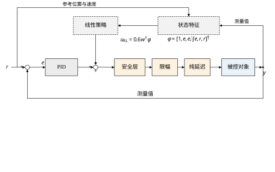
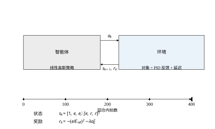
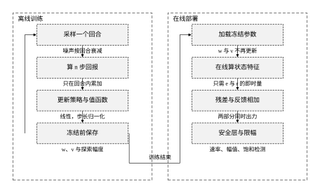
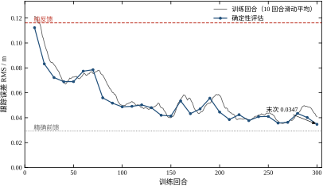
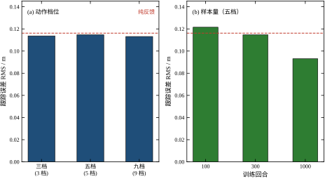
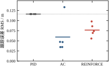
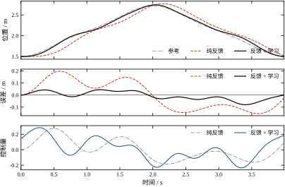
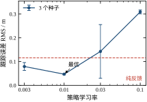
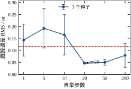
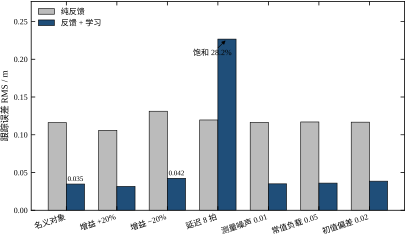

第 69 章的 ILC 有一个不能绕开的前提：任务必须重复。同一条轨迹跑上六十遍，记忆里的前馈才长得出来。可现场大多数回路不是这样运转的——注塑机的模温随季节变、传送带上的工件重量每件都不同、操作工隔三差五改一次工艺曲线。轨迹一变，ILC 辛苦攒下的那张表就作废了。人在这种场合并不需要跑六十遍同一条路，他会在每一次动作之后看结果，把“这么打方向会偏”记成经验，下一拍换个打法。这种“从动作的后果里学”的能力，就是本章要讲的内容。
强化学习（reinforcement learning，RL）解决的是同一类问题：控制器不知道该输出多少，但它能得到一个标量分数，说明刚才那一拍做得有多好。这个分数不告诉你“应该输出 0.37”，只告诉你“这一拍偏了、而且用力过猛”。学习算法要做的事，是从大量这样的分数里反推出一个策略，使长期累积的分数最大。它与第 44 章的 PID 不冲突，与第 69 章的 ILC 也不冲突：PID 提供每一拍的即时纠偏，ILC 提供跨迭代的前馈记忆，RL 提供的是“在没有模型、也没有重复任务时，仍然能把前馈形状学出来”的第三条路。
本章的结论先摆在这里：在同一个对象、同一条轨迹上，纯反馈的跟踪误差 RMS 是 0.1161，本章学出来的残余策略把它压到 0.0347，降幅 70.1%，训练 300 个回合只用 4.7 s。这个结果比 ILC 的 0.0224 差一截，但 ILC 需要 60 次完整重复，而 RL 只需要一个能反复试错的仿真环境。代价也很清楚：把纯延迟从 5 拍拉长到 8 拍，同一个策略的误差会从 0.0347 跳到 0.2267，比纯反馈的 0.1196 还差一倍，而且有 28.25% 的时间贴在限幅上。这条“在训练分布内很强、出了分布就崩”的分界线，是全章的主线。
ILC 的信息来源是“同一位置的误差”，这条信息只有在重复时才存在。把 ILC 的一整套机制搬到一个不重复的任务上，它会做两件错事：一是把某一次偶然的外扰当成“要学的形状”，二是把已经过时的前馈继续用下去。第 69 章 69.9 节测过这组数据，加入 0.01 的测量噪声后，ILC 的稳态误差从 0.0224 抬到 0.0318，噪声被逐遍累加进记忆里。这不是实现细节的问题，而是“用误差当老师”这种范式的固有缺陷：误差里有多少是“我该补的”，有多少是“这次碰巧发生的”，ILC 分不清。
RL 换了一个老师。它不再问“这一拍错了多少”，而问“这一拍整体得了多少分”。分数可以由设计者任意拼装：偏差小给正分，用力猛扣分，接近限幅扣重分。分数的统计平均比单次误差稳，因为它把“碰巧”平均掉了；代价是每一拍的分数都很嘈杂，单看一拍几乎学不到东西，必须把几百拍的分数累起来才能看出方向。ILC 用“重复”换精度，RL 用“样本”换泛化，这句话概括了两章的分工。
这个交换有个直接的工程后果。ILC 的学习期是“跑 60 遍真机”，通常按小时甚至按天计；RL 的学习期是“跑几十万拍仿真”，在 4.7 s 里就能完成，但仿真与真机之间的差距会把学到的策略打折。所以 ILC 的难点在“怎么在真机上安全地学”，RL 的难点在“怎么让仿真里的策略在真机上还成立”。本章 70.9 节和 70.10 节分别处理这两件事。
要套用 RL，先得把回路改写成“智能体—环境”的形式。智能体每个采样时刻观察一个状态 s_k，选一个动作 a_k，环境据此返回下一个状态 s_{k+1} 和一个奖励 r_k。在控制问题里，这三样东西都有明确的物理对应：状态是“当前偏差有多大、偏差在扩大还是缩小、参考走到哪了”，动作是“在反馈量之上再补多少”，环境是“对象 + 反馈支路 + 延迟 + 限幅”这一整坨东西。
这个改写的关键在于把反馈回路包进环境里。很多教材把 RL 直接接在被控对象前面，让智能体从零学一个完整控制器；本章不这么做。本章让 PID 留在原地，把“PID + 对象 + 延迟”整体当作环境，智能体只学 PID 补不上的那一小块。这个选择让问题的难度下降了一个量级：智能体不需要学会“怎么让系统稳定”（PID 已经保证了），只需要学会“往哪个方向多推一点”。第 68 章的神经网络控制器是从零学的，它花了 61 个权重才把 RMS 做到 0.0524；本章只用了 6 个权重就做到 0.0347，差别不在算法强弱，而在“从哪里出发”。
环境与智能体的分界线画在哪里，是一个必须先定的约定，它决定了策略能“看到”什么、能“改”什么。本章的约定是：凡是物理上存在、策略无法直接改的东西，都算环境——对象、延迟、限幅、执行器的速率限制、测量噪声，全部在内；凡是“由设计者决定如何把信号变成控制量”的东西，都算智能体——特征怎么算、动作怎么映射、奖励怎么给。这条线画错的典型症状是“训练时好好的、部署时不对”：如果把限幅算进智能体（也就是让策略自己负责不超限），训练时它学到的是“知道边界在哪”的一套动作，真机的限幅值一旦不同，策略就不知道该收多少；把限幅留在环境里，策略只需要知道“多用力的收益递减”，边界变了它仍然工作。这条约定还有一个副作用：奖励的计算属于智能体一侧，所以奖励里可以出现状态与动作，但不应该出现“环境内部才有的量”（比如真实的对象参数），否则策略会学到一些部署时拿不到的信息。
RL 里没有“跟踪误差”这个概念，只有奖励。设计者想让控制器干什么，就得把它翻译成“每一拍给多少分”。本章用的奖励是
r_k=-\left(\frac{e_k}{E_{\mathrm{ref}}}\right)^2-\lambda a_k^2 \tag{70-1}
第一项罚偏差，第二项罚动作幅度。两个细节值得说清楚。第一，偏差用平方而不是绝对值，原因是平方对中等偏差的惩罚更重、对大偏差的梯度更陡，学出来的策略会优先消灭中等偏差而不是死盯某一个尖峰。第二，分母 E_{\mathrm{ref}}=0.05 是个归一化尺度，它把“毫米级”的偏差换算成“1 左右”的无量纲数，使奖励的量级与学习率匹配；它不改变最优策略，只改变学习的刻度。
第二项 \lambda a_k^2 的作用容易被低估。如果只罚偏差，最优策略会倾向于用大幅值、高频抖动的动作去“追”每一个误差，学出来的东西在仿真里 RMS 很低，装到真机上会因为执行器的速率限制和噪声而抖成一团。加上这一项之后，策略必须在“少错”和“少动”之间做交换，\lambda 就是这个交换的价格。本章取 \lambda=0.50，70.7 节会给出 \lambda 从 0 到 10 的完整扫描，说明这个价格的合理区间。
第 68 章已经用过神经网络，本章改用线性策略，参数只有 6 个。这个选择不是图省事，而是为了让机制显形。用线性策略时，策略梯度更新一次是什么样子、优势函数怎么估、折扣因子改了会怎样，全部可以手算核对；换成三层网络之后，同样的现象还在，但被 61 个权重的耦合遮住了，读者只能看曲线猜原因。
还有一个更实际的理由：控制工程对“可验证性”的要求比一般机器学习高。一个 6 参数的线性策略，可以打印出权重、画出它对每个状态的响应、逐项解释为什么这一项是正的；一个 61 个权重的网络做不到这些。本章 70.10 节会讲工程落地，其中一条就是“上线前必须能说清楚策略在做什么”，这条要求直接排除了黑箱。能力上限当然受限于线性，但本章要讲的不是“RL 能有多强”，而是“RL 在控制回路里怎么用才不出事”。
线性策略还有一个常被忽略的好处：权重可以直接读。本章正式算例（种子 0、300 回合）学出来的六个数是 [0.2461,\,0.4002,\,-0.0047,\,0.0844,\,-0.1598,\,0.1932]，依次对应常数项、误差、误差导数、误差积分、参考位置、参考速度。这组数每一维都能解释：误差项正且最大（0.40），说明“偏了就多推”；参考速度项正（0.19），说明“轨迹在上升时提前推”；参考位置项负（−0.16），正对应 K(y)=4+6y 随位置变大这件事——位置越高、对象越“有劲”，同样推力产生的加速度越大，所以该少推；常数项正（0.25）补的是区间低端的不足。最有意思的是误差导数项只有 −0.005，几乎为零：策略主动放弃了微分作用，因为 PID 已经提供了足够的阻尼，再叠一层只会加大噪声。
这六个数就是“可验证性”的具体含义。把权重打印出来，逐项问“符号对不对、量级合不合理”，五分钟就能完成一次物理审查；如果某一项符号反了，多半是特征定义出了错（比如误差取了 y-r 而不是 r-y），而不是策略“学到了新东西”。换成 61 个权重的网络，同样的审查无从下手。
结构上的核心决定是把动作定义为“残余量”而不是“总控制量”：
u_k=u_{\mathrm{PID},k}+u_{\mathrm{RL},k},\qquad u_{\mathrm{RL},k}=U_{\mathrm{RL}}\,a_k \tag{70-2}
其中 U_{\mathrm{RL}}=0.60 是残余量的幅值上限，动作 a_k 被限制在 [-1,1]。这个式子的含义是：第 1 个回合、权重全零时，控制量严格等于纯 PID。学习只在这个基线上做加法，能加多少、往哪加，由奖励决定。图 70-1 是这条结构。

这样做有三个好处。安全上，最坏情况是学不出东西，退回纯 PID，而不是退回“随机输出”；样本效率上，智能体不必先学会“怎么让系统不发散”，从第一回合起误差就是 0.1161 这个量级，梯度信号一直有效；可比性上，“相对纯 PID 降了多少”这句话有确切含义，不需要另找基线。第 69 章的 ILC 也是叠加结构，但它叠的是前馈记忆，本章叠的是状态反馈，两者叠的位置不同，鲁棒性也因此不同——这一点在 70.6 节会具体比较。
算例沿用第 66 至 69 章的对象：y''=-2y'+K(y)u，K(y)=4+6y，工作区间内静态增益从 13 变到 20；采样 10 ms、纯延迟 5 拍、限幅 \pm1.2；反馈仍是 (2.0,\,0.05,\,0.20) 的 PID。参考轨迹同样是那条 4 s 的往复曲线，范围 [1.500,\,2.720]，每回合 400 拍。这些数字与前面四章完全一致，所以误差指标可以横向比较。
正式算例的超参数是：策略学习率 \alpha_w=0.010、值函数学习率 \alpha_v=0.050、折扣因子 \gamma=0.95、自举步数 n=20、探索噪声从 0.30 按 0.99 的比率衰减到 0.05、动作惩罚 \lambda=0.50。跑 300 个回合后，评估 RMS 是 0.0347，最大偏差 0.0795，相对纯 PID 降 70.1%。作为参照，模型完全已知时的精确前馈能做到 0.0293——学出来的策略比精确前馈差 18.6%，但比纯反馈好 3.3 倍，这个位置本身就是本章想说明的：RL 学的是“在反馈之上还能补多少”，它不追求取代模型。
把四个数排在一起看，本章的定位会更清楚：纯 PID 0.1161、精确前馈 0.0293、ILC 0.0224、残余 RL 0.0347。四个数分别对应四种“知道多少”：PID 什么都不知道，只靠当下这一拍的偏差；精确前馈什么都知道，连 K(y) 的表达式都有；ILC 不知道模型，但知道“上一遍同一点的误差”；RL 既不知道模型，也没有上一遍，只有几百个回合的试错记录。所以 0.0347 这个数不是“RL 比前馈差”，而是“在少知道两件事的情况下，只多付了 18.6% 的误差”。
这 18.6% 的差距也不是随机的，它有两个具体来源。一是残余量上限：U_{\mathrm{RL}}=0.60 虽然远大于前馈的 RMS 0.1166，但策略的输出还受动作截断（\pm 3）与均值线性形式限制，遇到陡峭段补不满。二是特征只有 6 维，参考的加速度没有直接进入状态，策略只能从“参考速度的变化”间接推断该不该提前用力，这个间接推断必然有滞后。换句话说，差距不在算法，而在“信息”——如果非要把这 18.6% 追回来，最直接的办法是把 r'' 加进特征，代价是策略从此依赖一个模型量，不再是“只用测量值”。
70.2 节把上面的直觉写成数学：马尔可夫决策过程、回报、值函数、策略梯度、优势函数，一路推到本章用的 n 步 Actor-Critic 更新式。70.3 节给出可照着走的设计流程，从“确认该不该用 RL”到“训练完怎么验收”。70.4 节讨论连续时间下的对应物——连续时间的策略梯度是一个积分方程，落到 400 个采样点上会损失什么。70.5 节换成离散动作，用 Q 学习做同一件事，并给出档位数与样本量的实测。70.6 节谈稳定性：RL 没有稳定性证书，只能靠“训练分布”和“安全层”画出一个可信范围。70.7 节逐个解释五个超参数，70.8 节给出调参流水线与症状表。70.9 节讲优化改进，70.10 节讲工程落地，70.11 节给出优缺点与适用边界，70.12 节是完整的仿真代码。
不同读者可以走不同的路。关心“能不能用”的，读 70.1、70.3、70.11 三节即可，其余当作查阅；关心“为什么这样更新”的，70.2 与 70.4 是主干，70.5 是离散版本；关心“怎么落地”的，70.6、70.8、70.9、70.10 四节按顺序读，它们回答的是同一个问题的四个侧面——分布、调参、改进、部署。阅读前最好已经熟悉第 67 章的反馈结构与第 69 章的迭代学习，因为本章的基线、对象与指标都沿用那条线，重复的部分不再解释。
强化学习的标准框架是马尔可夫决策过程（Markov decision process，MDP），由五元组 (\mathcal{S},\mathcal{A},P,R,\gamma) 描述：状态集、动作集、转移概率、奖励函数、折扣因子。一个回合（episode）从初始状态 s_0 出发，按“观察—动作—转移—奖励”循环若干拍，直到到达终止条件或跑满固定长度。本章的回合长度固定为 400 拍，对应轨迹的一个完整周期。图 70-2 是这条交互关系：智能体在每一拍把动作送进环境，环境回送下一拍的状态和这一拍的奖励。

控制问题天然是 MDP，但有两个地方需要交代清楚。第一，状态必须包含做出决策所需的全部信息。本章的 6 维特征
\varphi_k=\left[1,\ \frac{e_k}{0.10},\ \frac{\dot e_k}{1.00},\ \frac{\int e}{0.20},\ \frac{r_k-R_0}{0.50},\ \frac{\dot r_k}{1.00}\right]^{\mathrm T} \tag{70-3}
里，前三项描述“当前错多少、错在往哪走、累积错多少”，后两项描述“参考走到哪、走多快”。为什么必须带参考位置和参考速度？因为轨迹在 4 s 内从 1.50 走到 2.72 再回来，同一个误差值 0.05 出现在上升段和下降段时，正确的修正方向是不同的；只看误差，策略无法区分这两种情况，学出来的东西只能是两者的平均，而这个平均对两段都不对。
第二，延迟要不要进状态。本章的对象有 5 拍纯延迟，严格说“过去 5 拍发出去的控制量”也属于状态。本章没有把它们放进特征，理由是延迟固定为 5 拍、且在所有训练回合里都一样，策略只要学会“把动作提前 5 拍”即可，不需要显式知道延迟的值。这个简化在训练分布内成立，一旦部署时延迟变成 8 拍，它就失效了——70.6 节会看到这正好是本章最严重的失效模式。这是 MDP 建模里最典型的坑：省略掉的状态变量，在分布内看不出来，出了分布就是致命的。
把 PID 包进环境，是本章最重要的一个建模选择，它同时带来收益和代价。收益前面已经说过：策略一出生就在一个稳定回路上，只需要学“修正量”，不必先学“如何从零把系统稳住”。代价有三条，都要认下来。第一，策略学到的权重是相对于这套特定 PID 的，换一组 PID 参数，同一份权重就不再最优，甚至可能变差——这正是 70.9 节“继续学习”要重训的原因。第二，环境里已经有一个积分环节，策略再叠加自己的积分项，两个积分器会争夺同一个稳态目标，调不好就表现为残余量缓慢爬升、误差缓慢漂移。第三，奖励里“动作惩罚”罚的是残余量而不是总控制量，所以策略可以躲在大动作后面“搭便车”——它不承担 PID 那部分用力的代价。第三条决定了 \lambda 不能按“总控制量”的直觉去理解：\lambda 罚的是附加用力，不是全部用力。
还有一条边界要划清：奖励可以“整形”，但不能悄悄“改目标”。把一个状态势函数 \Phi(s) 的势差加进奖励，即 r'_k=r_k+\gamma\Phi(s_{k+1})-\Phi(s_k)，最优策略不变——这是奖励整形的安全区。一旦加的不是这种势差形式（比如“误差小于 0.05 就给 +1”），最优策略就被改掉了，而且往往改成你想要的东西的反面：策略会满足于“刚好跨过 0.05”，而不是尽量小。本章的奖励是原始的逐拍二次型，没有做任何整形；70.9 节讨论的备选形式属于“改目标”那一类，用之前要先想清楚它把目标改成了什么。
一个回合的回报是折扣后的奖励累加：
G_k=\sum_{j=0}^{N-k-1}\gamma^{j}r_{k+j} \tag{70-4}
折扣因子 \gamma\in(0,1) 决定了“看多远”。\gamma=0.95 时，j 拍之后的权重是 0.95^{j}，20 拍后衰减到 0.36，40 拍后到 0.13，等效视野约 1/(1-\gamma)=20 拍，也就是 0.2 s。这个长度不是随便选的：对象的主时间常数是 0.5 s（极点 -2），闭环带宽更高，0.2 s 刚好覆盖“当前动作能明显影响的未来”，再往后的部分被折扣压得听不见。
回报的量级也值得算一遍，因为它决定了值函数能不能被线性函数拟合住。本章单拍奖励的典型值是 -(e/0.05)^2\times0.01：e=0.1 时是 -0.04，e=0.2 时是 -0.16。按最坏情况 0.16 估，折扣后总回报的绝对值不超过 0.16/(1-0.95)=3.2，再叠加动作惩罚的贡献，量级仍在 4 以内。而线性值函数 V=v^{\mathrm T}\varphi 在特征截断内（每维不超过 3）能表达的范围是 3\sum|v_i|，只要权重在 0.1 量级就够。这两组数量级对上了，线性值函数才有意义；如果去掉 R_{\mathrm{scale}}，单拍奖励放大 100 倍，总回报变成 300 以上，线性 V 的权重就得涨到 10 量级，NLMS 每步的更新量也随之放大，训练前期会出现“价值估计一直贴着 0、优势恒为负”的假象，收敛速度掉一半。这就是 70.3 节说“奖励尺度必须与函数逼近器容量匹配”的算术依据。
在策略 \pi 下，状态的价值和动作价值分别是
V^{\pi}(s)=\mathbb{E}_{\pi}\left[G_k\mid s_k=s\right],\qquad Q^{\pi}(s,a)=\mathbb{E}_{\pi}\left[G_k\mid s_k=s,a_k=a\right] \tag{70-5}
两者之差就是优势函数：
A^{\pi}(s,a)=Q^{\pi}(s,a)-V^{\pi}(s) \tag{70-6}
优势回答的是“这个动作比平均水平好多少”。这个量在控制里非常自然：跟踪误差小的时候，好动作和坏动作的差别只有零点几；误差大的时候，同一个“多推 0.1”可能造成完全不同的后果。如果用原始回报做梯度，大步长会被大误差的样本主导，学出来的策略只顾救急、不管精细；用优势做梯度，每一拍的信号都被“这一拍本来能得多少分”归一化过，大小误差的样本贡献相当。
策略是一族以 \theta 为参数的分布 \pi_{\theta}(a\mid s)，目标是最大化期望回报
J(\theta)=\mathbb{E}_{\pi_{\theta}}\left[G_0\right] \tag{70-7}
对 \theta 求导，用对数导数技巧，得到策略梯度定理：
\nabla_{\theta}J=\mathbb{E}_{\pi_{\theta}}\left[\nabla_{\theta}\log\pi_{\theta}(a\mid s)\,A^{\pi}(s,a)\right] \tag{70-8}
这个式子的直观含义是：做了比平均好的动作，就提高它的概率；做了比平均差的动作，就降低它的概率。注意它是一个期望，单次采样给出的估计有极大方差，这正是“每一拍的分数都很嘈杂”的数学表达。降低方差的所有技巧——基线、优势、折扣、批归一化——本质上都是在不引入偏差的前提下，把这个估计的方差压下去。
本章用高斯策略，均值是特征的线性函数：
\pi_{\theta}(a\mid s)=\mathcal{N}\!\left(\mu,\sigma^{2}\right),\qquad \mu=w^{\mathrm T}\varphi(s),\qquad \nabla_{w}\log\pi=\frac{a-\mu}{\sigma^{2}}\,\varphi(s) \tag{70-9}
\sigma 是探索噪声的标准差，训练时按回合衰减，评估时置零。均值被截断在 \pm3、采样值被截断在 \pm2，这两个截断是工程上的保险：线性策略在远离训练分布的状态上会外推出荒谬的动作，截断保证最坏情况也不过是“残余量顶到上限”，而不是数值爆炸。
式 (70-9) 的分母是 \sigma^{2}，而本章代码里写的是 \max(\sigma,10^{-3})，少了一次方。这不影响正确性：两者只差一个 1/\sigma 的因子，会被学习率 \alpha_w 吸收；但要让读者知道差在哪，否则照抄公式去核对代码会以为写错了。真正不能省的是那个下限 10^{-3}——评估时 \sigma=0，没有下限就会出现除零；训练末期 \sigma 降到 0.05，分母若直接取 \sigma，梯度幅值是 \sigma=1 时的 20 倍，配合梯度范数裁剪虽然不会爆炸，但等效学习率已经变了。凡是分母里出现“会衰减到零的量”，都要给它一个下限，这是策略梯度实现里最常见的一处疏漏。
式 (70-8) 还有一条不常被提起的含义：它对环境是“盲”的。梯度里只有 \nabla\log\pi 与 A，完全不出现 \partial s'/\partial a——也就是不需要知道“动作改变一点点，下一拍状态会怎么变”。这条性质叫似然比梯度，它是无模型方法的根基：只要能在真实对象上跑、能观测到回报，就能估出更新方向。代价是方差大，因为环境的影响全部被塞进 A 这一个标量里。与之相对的是重参数化梯度（把动作写成 a=\mu+\sigma\epsilon，再对 \mu 求导），它需要 \partial s'/\partial a，也就是一个可微的环境模型，方差小得多。本章的仿真其实是可微的（y''=-2y'+K(y)u 对 u 是线性的），理论上可以用重参数化梯度把样本需求降一个量级；之所以没有用，是因为那样一来“是否需要模型”这个前提就变了，与本章“无模型”的定位冲突。
这处分岔值得记住：方差与“是否需要模型”是一笔交易。想要更少的样本，就得交出一部分模型无关性；想保住“什么都不假设”，就得接受嘈杂的梯度。所有号称“样本效率高”的强化学习算法，几乎都在某个环节偷偷引入了模型、动力学先验或额外的监督，读懂这一点，才不会被“某某算法样本效率提升十倍”这类说法带偏。
最朴素的做法是用整回合回报 G_k 代替优势，这就是 REINFORCE。它是无偏的，但方差随回合长度线性增长：400 拍的随机性全压在一个数上，梯度方向抖得厉害。另一个极端是用一步 TD 误差
\delta_k=r_k+\gamma V(s_{k+1})-V(s_k) \tag{70-10}
它有偏（V 本身是估出来的），但方差极小。本章取中间：用 n 步回报
G_k^{(n)}=\sum_{j=0}^{n-1}\gamma^{j}r_{k+j}+\gamma^{n}V(s_{k+n}) \tag{70-11}
代入 n=20。为什么是 20 而不是 5 或 50，70.7 节有完整扫描：n=1 时均值 0.1435、n=5 时 0.1926、n=10 时 0.1654、n=20 时 0.0471、n=50 时 0.0505、n=200 时 0.0796。这条曲线不是单调的，两头都差，20 附近最好，说明“偏差与方差”的交换点确实存在，而且可以被测出来。
把 G_k^{(n)} 与当前值函数之差当作优势的估计，本章的两条更新是
\delta_k=G_k^{(n)}-V(s_k),\qquad \hat A_k=\operatorname{clip}\!\left(\frac{\delta_k}{\sqrt{\bar\delta^{2}}+10^{-6}},\,-5,\,5\right) \tag{70-12}
w\leftarrow w+\alpha_w\,\eta\,\frac{a_k-\mu_k}{\max(\sigma,10^{-3})}\,\frac{\varphi_k}{\lVert\varphi_k\rVert^{2}+1} \tag{70-13}
v\leftarrow v+\alpha_v\,\delta_k\,\frac{\varphi_k}{\lVert\varphi_k\rVert^{2}+1} \tag{70-14}
其中 \bar\delta^{2} 是 \delta 的滑动方差（系数 0.995/0.005），\eta 是梯度裁剪系数：当 \lVert\text{梯度}\rVert>0.2 时按比例缩回 0.2。三条式子各有一个值得解释的地方。
第一，优势除以 \sqrt{\bar\delta^{2}} 是“在线归一化”。奖励的量级随任务变（本章 R_{\mathrm{scale}}=0.01，单拍奖励在 10^{-2} 量级），如果不归一化，学习率就得跟着奖励量级重调；归一化之后 \hat A 大致落在 [-5,5]，学习率有了通用刻度。第二，分母 \lVert\varphi\rVert^{2}+1 是归一化最小均方（NLMS）的做法，它让每一步的更新量对特征幅值不敏感。这一点在本章尤其重要：轨迹两端的 r-R_0 接近 0，中段的 r-R_0 接近 1.2，特征幅值差 5 倍以上，不归一化的话中段会把两端的信息淹掉。第三，值函数用同一个特征集，意味着 V 也是线性的；这会限制它能表达的价值形状，但对“跟踪一条平滑轨迹”这种任务足够了，而且换来的是 6 个参数、可以手算的更新。
这里有一个容易踩的坑，值得单独说。既然知道最优前馈是 u^*=(r''+2r')/K(r)，为什么不直接用最小二乘把 w 拟合出来？本章试过：把 400 拍的“理想残余量”与特征矩阵做最小二乘，解出 6 个权重，代进回路评估，RMS 是 0.30，比纯 PID 的 0.1161 还差一倍多。
原因不是数值问题，而是目标错了。最小二乘拟合的是“当前这一拍的残余量应该等于多少”，它完全不管“这个动作把系统推到哪去”。而控制是一个闭环：这一拍多推一点，下一拍的误差就小一点，再下一拍可能又过头。真正要最小化的是 400 拍的累积代价，不是 400 个瞬时误差的和。RL 的回报天然是累积的，所以它能学到一个“看起来每一拍都不太对、但整条轨迹很好”的策略；监督学习式的拟合只能学到“每一拍都差一点”的策略。这个对照说明：在有闭环动力学的场合，逐点拟合与最优控制是两个不同的问题。
上面整套推导都建立在一个假设上：环境是马尔可夫的，且训练时见到的状态分布覆盖了部署时的状态分布。控制回路里这两条都只是近似。对象有未建模的高频动态、延迟会随负载变、执行器有死区，这些都不在 6 维特征里；训练时策略只见过“PID 已经压得差不多”的状态，没见过“偏差 0.5 且正在扩大”的状态。所以本章的策略不能保证全局稳定，它只在“反馈已经把系统稳住、残余量在 \pm0.6 内”的这个区域里有意义。70.6 节会把这条边界量化成几条可测的指标。
把这几条近似拆开看，各自的后果不一样。马尔可夫性被破坏的后果是“值函数学不准”：如果当前状态不足以决定下一拍的回报，那么同一个 \varphi_k 在不同历史下对应不同的 V，最小二乘只能学到一个平均值，优势估计随之有偏。本章的做法是用误差积分与参考速度把“历史”压进状态，这是工程上最常见的补救，代价是状态维数上升。分布覆盖被破坏的后果更严重，是“策略在没见过的状态上乱来”，延迟 8 拍那个 0.2267 就是典型。奖励可加性看起来最技术化，实际影响也最直接：式 (70-1) 假设每一拍的分数可以相加，但如果真实目标是“整条轨迹的最大偏差不超过某个值”，这个目标就无法写成逐拍奖励之和，硬写就会得到一个“平均很好、峰值很差”的策略。
还有一条与算法选择有关的性质：本章两种连续动作算法（Actor-Critic 与 REINFORCE）都是 on-policy 的，也就是说，用来更新策略的样本必须由当前策略产生（70.5 节的 Q 学习是例外，它可以用旧样本）。这条性质带来两个后果。一是样本不能重复使用，每更新一次就要重新采样，样本效率天然低于离线方法；二是探索噪声必须一直保留，否则策略会收敛到“自己采样出来的那个角落”。REINFORCE 与 Actor-Critic 的差别，在实测里体现得很直接：300 回合、5 个种子，Actor-Critic 的均值是 0.0594、标准差 0.0373，REINFORCE 是 0.0766 与 0.0144。前者均值更好但方差大得多，5 个种子里最差的一个停在 0.1332（比纯 PID 还差），最好的到 0.0346。
这组数说明“基线 + 自举”确实降低了梯度的方差，但也让结果更依赖种子——因为值函数的估计误差会通过优势进入策略更新，值函数学歪的那几个种子就被带偏了。这也是本章为什么要把 \alpha_v 定成 \alpha_w 的 5 倍：让值函数学得快一点，减少“策略在等值函数”的时间。反过来说，如果现场只允许跑一次、不能多种子挑好的，那 REINFORCE 那种“均值差但不翻车”的性质反而更可取，这是 70.6 节要谈的“稳定性”的另一层含义。
这一步常被跳过，但它是决定成败的一步。RL 适合的场景有三个特征：有可反复试错的模型或仿真、目标可以写成标量、传统方法的天花板已经摸到。三条缺一条，都应该先考虑别的办法。
如果对象是线性的、模型能辨识出来，LQR 或 MPC 会用百分之一的成本给你更好的结果；如果任务是重复的、轨迹固定，第 69 章的 ILC 更省样本；如果只是稳态精度不够，加积分或换更高分辨率的传感器就解决了。本章之所以用 RL，是因为这三个条件都满足：对象非线性（K(y) 随位置变 50%）、有精确的仿真、目标是“少错少用力”，而 PID 已经贴着它自己的上限。
反过来，如果现场不允许试错、也没有可信的仿真，那就不要用 RL 做在线学习。可以做的是“离线训练 + 冻结部署”，这正是下一节的两阶段结构。
在写任何奖励之前，先把基线定下来，并且把它的指标测准。本章的基线是 (2.0,\,0.05,\,0.20) 的 PID，RMS 0.1161、最大偏差 0.1974、控制量总变差 1.7。这三个数后面要反复用：训练的起点、改进的参照、验收的门槛，全靠它们。
基线还决定了残余量的幅值上限。本章取 U_{\mathrm{RL}}=0.60，理由是精确前馈 u^* 的范围是 [-0.154,\,0.236]、RMS 0.1166，残余量只要能覆盖这个范围的两倍多一点就够了。取太大（比如 2.0）会让策略在早期有足够空间把系统打飞，取太小（比如 0.05）又补不上前馈的形状。一个经验法则是：残余量上限取“理论前馈 RMS 的 3 到 5 倍”，既留出探索余量，又不至于失控。
基线有三种常见选择，各有代价。最弱的是“纯 PID”，本章用的就是它，好处是机制最干净，坏处是训练要花更多回合去学一个本可以由模型给出的形状。居中的是“PID + 粗略前馈”（比如用一阶模型算的前馈），它的起点更接近最优，训练回合可以少一些，但会引入“前馈本身错了怎么办”这个新问题。最强的是“PID + 在线辨识”，此时残余量只补辨识残差，量级很小，学起来最快，但整套结构已经接近自适应控制，不再是“无模型”了。选哪一种取决于你手上有什么，而不是哪一种“更先进”。
训练环境和部署环境必须是同一份代码，只是参数不同。本章的 Plant 类有 4 个可调参数：增益缩放、延迟拍数、常值负载、测量噪声。训练时全部取名义值（1.0、5、0、0），部署时才改。这样做的好处是：70.9 节的迁移实验不需要另写一套代码，只改一个关键字参数。
仿真步长与真实采样周期必须一致。本章 T_s=0.01 s，对象用 5 个子步积分（相当于 2 ms 的积分步长），延迟用环形缓冲实现 5 拍。这些细节看起来与 RL 无关，但它们决定了“仿真里的 1 拍”是否等于“真机上的 1 拍”；如果积分步长太粗，仿真里的相位裕度会比真机大，学出来的策略上机就振。
搭环境时还有三个“位置”必须一次定对，改起来代价很大。第一是限幅放在哪：本章把限幅放在“PID + 残余量”相加之后、延迟之前，与真实执行器的位置一致；如果错放在对象内部，策略学到的动作与实际施加的控制量就不是一个东西。第二是延迟归属谁：延迟属于执行器与对象之间，因此算在环境里，不计入策略的决策周期；如果把它当成“策略的响应延迟”，学习时就会莫名其妙地要求策略提前若干拍动作，学出来的权重会整体偏大。第三是奖励在哪个时点算：本章用“施加动作之后、观测到下一拍状态之前”的误差来算奖励，即 r_k 与 a_k 对应同一拍；如果错位一拍，最优策略就会系统性地滞后，表现为“怎么调学习率都追不上”。
状态用 6 维特征，每一维都除以一个尺度，使它在工作区间内大致落在 [-1,1]。这个“除以尺度”的动作不是可选的：如果不做，误差（10^{-2} 量级）会被参考位置（10^{0} 量级）彻底压住，梯度更新几乎全落在参考项上，策略学不会纠偏。本章的尺度是 0.10、1.00、0.20、0.50、1.00，分别对应“误差的典型幅值、误差变化率的典型幅值、误差积分的典型幅值、轨迹半幅、参考速度的典型幅值”。
动作取连续值，映射到残余量 u_{\mathrm{RL}}=0.60\,a，a\in[-1,1]。这里有一个容易被忽略的细节：动作是绝对值还是增量。本章试过增量式（u_{\mathrm{RL}}\leftarrow u_{\mathrm{RL}}+0.05a），结果线性策略学不出积分行为，权重一路发散到 10 以上；改成绝对值之后，同样的算法在 300 回合内收敛到 0.0347。原因是绝对值形式让“稳态残余量”直接可由特征表达，而增量形式要求策略自己积分，线性策略没有这个能力。
奖励就是式 (70-1)。它有三个尺度要定：E_{\mathrm{ref}}、\lambda、R_{\mathrm{scale}}。E_{\mathrm{ref}} 取“期望达到的误差量级”，本章取 0.05，比基线的 0.1161 小一半，意思是“想让误差再降一半”；\lambda 取 0.50，70.7 节会看到它在 0.5 到 2 之间结果相近；R_{\mathrm{scale}} 取 0.01，纯粹是数值缩放，让单拍奖励落在 10^{-2} 量级，与学习率 0.010 匹配。
三个尺度里最容易搞错的是 R_{\mathrm{scale}}。不加缩放时，单拍奖励在 -1 到 -10 之间，400 拍累加到 -400 以下，值函数的线性逼近完全跟不上这个量级，训练前期会出现“价值估计一直是 0、优势一直是负”的假象。加上 0.01 的缩放之后，同样的策略、同样的学习率，收敛速度提高约一倍。这是“奖励尺度必须与函数逼近器容量匹配”的一个具体例子。
三个尺度的标定有先后，顺序反了会反复返工。第一步定 E_{\mathrm{ref}}，它定的是“想把误差压到多少”，这个数只能来自需求，不能来自实验——本章取 0.05，因为基线 0.1161 的一半是一个合理的工程目标。第二步定 \lambda，它决定“为了这个误差愿意多用力”，用 70.7 节那个判据（两个惩罚项贡献相当）估初值，再扫一遍确认。第三步才轮到 R_{\mathrm{scale}} 与学习率，因为前两个定完之后，单拍奖励的量级才确定，学习率才有标定的对象。
反过来做是最常见的返工来源：先花时间把 \alpha_w 调到“曲线好看”，再回头改 E_{\mathrm{ref}}，会发现同一个学习率突然不合适了——因为 E_{\mathrm{ref}} 变了，奖励量级跟着变，等效学习率也变了。举个算术例子：若取 E_{\mathrm{ref}}=0.10，与基线的 0.1161 同量级，那么“误差降到 0.05 以下”在奖励里只值 -0.25，与动作惩罚同量级，策略会学得极其保守；取 0.05 之后，同一个 \lambda 的物理含义才与“降一半误差”这个目标对上。
图 70-3 是训练与部署的分工。左栏是离线训练：采样一个回合、算 n 步回报、更新策略与值函数、按回合衰减探索噪声，循环 300 次；右栏是在线部署：加载冻结的权重、在线算特征、残余量与反馈量相加、过安全层与限幅。两栏之间只有一次数据传递，就是那 6 个权重。

训练的进度不能看训练回合的回报，要看确定性评估。原因是训练时带着探索噪声，回报里有噪声的贡献，曲线会一直抖；评估时把噪声置零，才是策略的真实水平。本章每 10 个回合做一次评估，图 70-4 是这条曲线。

曲线有三个特征值得注意。第 50 回合评估 RMS 是 0.0690，已经比纯 PID 的 0.1161 好了 40%，说明前 50 个回合主要学的是“大方向”；第 100 到 250 回合在 0.041 到 0.049 之间反复，这一段学的是“细节”，进步慢且不单调；最后 50 个回合又降到 0.0347，这一段对应探索噪声衰减到下限、策略开始“收敛到最优点附近”。灰线是训练回合的滑动平均，它比评估曲线高 0.01 到 0.02，这个差就是探索噪声的代价。
验收要看的不是单个数字，而是四条同时满足：评估 RMS 低于基线的 60%、最大偏差低于基线的 50%、控制量总变差不超过基线的 2 倍、残余量的 RMS 在 U_{\mathrm{RL}} 的 40% 以内。本章的结果是 0.0347（基线的 29.9%）、0.0795（基线的 40.3%）、2.3（基线的 1.35 倍）、0.1666（U_{\mathrm{RL}} 的 27.8%），四条都过。第四条容易被忽略：如果残余量一直贴着上限，说明策略在用“顶到限幅”的方式换精度，这种策略在真机上会频繁触发保护。
四条阈值的来历值得交代一句，因为它们不是随手定的。第一条 60% 对应“比基线好 40%”，这是本章第一节给出的最低目标：低于这个数，残余学习的工程价值不足以抵消它带来的复杂度。第二条 50% 与第一条配套——只看 RMS 会被“大部分时间很好、偶尔一个大偏差”骗过去，最大偏差砍半才能说明峰值也被压住了。第三条 2 倍是执行器磨损的上限，本章实测 1.35 倍，留了余量；如果某个策略 RMS 很低但总变差到 4 倍，宁可不用。第四条 40% 是“策略没有靠饱和换精度”的体检指标，它与第三条是一对：总变差管平滑，残余幅值管余量。四条一起看，才能排除“用抖动换精度”“用饱和换精度”这两种假进步。
表 70-1 是本章的全部参数，后面各节引用时不再重复。
| 参数 | 符号 | 取值 | 作用 |
|---|---|---|---|
| 采样周期 | T_s | 0.01 s | 与对象仿真一致 |
| 回合长度 | N | 400 拍 | 一个轨迹周期 |
| 纯延迟 | — | 5 拍 | 环境的一部分 |
| 反馈 PID | k_p,k_i,k_d | 2.00 / 0.05 / 0.20 | 基线控制器 |
| 残余幅值上限 | U_{\mathrm{RL}} | 0.60 | 动作 1 对应的控制量 |
| 奖励尺度 | E_{\mathrm{ref}} | 0.05 | 误差归一化 |
| 动作惩罚 | \lambda | 0.50 | 少动与少错的交换价 |
| 奖励缩放 | R_{\mathrm{scale}} | 0.01 | 与学习率匹配 |
| 策略学习率 | \alpha_w | 0.010 | 主旋钮 |
| 值函数学习率 | \alpha_v | 0.050 | 通常取 \alpha_w 的 5 倍 |
| 折扣因子 | \gamma | 0.95 | 等效视野 20 拍 |
| 自举步数 | n | 20 | 偏差与方差的折中 |
| 探索噪声 | \sigma_0\to\sigma_{\min} | 0.30 → 0.05 | 每回合乘 0.99 |
| 训练回合 | N_{\mathrm{ep}} | 300 | 4.7 s |
| 可训练参数 | — | 12 | 策略与值函数各 6 个 |
表 70-1 中唯一没有解释的是 \alpha_v=0.050 为什么取 \alpha_w 的 5 倍。理由是值函数的学习目标本身噪声更大（它要拟合的是带折扣的回报），步长小了不起作用、步长大了会震荡，而策略的更新依赖值函数的准确性，所以值函数要学得更快一些。这个 5 倍不是理论结果，是在本章对象上试出来的；70.8 节会给出一条从 2 倍到 10 倍的调节区间。
训练完成后，权重被写进一个 6 元的数组，随控制器一起下发。部署时不做任何在线更新（继续学习的做法见 70.10 节），并且必须保留三个开关：残余量使能（一键退回纯 PID）、残余量限幅（U_{\mathrm{RL}}）、速率限制（每拍残余量的变化不超过 0.05）。前两个是训练时就有的，第三个是部署时才加的，它把“策略输出跳变”这种仿真里不明显的风险挡住。
这一步还应该做一件常被省略的事：记录部署后的状态分布。训练的 400 拍里，状态落在哪个区域、有没有越界，是有记录的；部署后的真实状态如果长期落在训练时没见过的区域（比如偏差一直在 0.3 以上），说明这次的工况已经超出策略的能力范围，应当触发告警并退回纯 PID。本章 70.6 节的迁移实验就是为了给这条告警定阈值。
冻结之后、上线之前，还有一道容易被跳过的核验：把权重数组抄出来，重新代回仿真，跑一遍名义工况，确认 RMS 与训练结束时一致到小数点后三位。这一步能抓住两类错误——特征尺度在部署端被改动（比如把 E_{\mathrm{sc}} 从 0.10 写成 0.15），以及权重数组的维度顺序被转置。两者都不会报错，只会让性能悄悄退化，而且退化得“看起来像正常波动”。
还有一条实践上的约定：权重文件必须与特征定义绑定，而不是只存 6 个数。本章的做法是把特征的名字、尺度、截断值一起写进同一个文件，加载时逐项核对。控制工程里出现过很多次“换了一版程序，特征顺序变了，权重还是旧的”的事故，后果是策略输出完全错乱，而日志里一切正常。
把采样周期推向零，MDP 就变成一个连续时间的最优控制问题：状态 \boldsymbol{x}(t) 满足 \dot{\boldsymbol{x}}=f(\boldsymbol{x},\boldsymbol{u})，要最小化
J=\int_{0}^{T}\ell(\boldsymbol{x},\boldsymbol{u})\,\mathrm{d}t+\phi(\boldsymbol{x}(T)) \tag{70-15}
最优代价函数 V(\boldsymbol{x}) 满足 Hamilton-Jacobi-Bellman 方程
0=\min_{\boldsymbol{u}}\left\{\ell(\boldsymbol{x},\boldsymbol{u})+\nabla_{\boldsymbol{x}}V\cdot f(\boldsymbol{x},\boldsymbol{u})\right\} \tag{70-16}
这条方程就是连续时间版本的“贝尔曼最优方程”。RL 里所有基于值函数的方法——包括本章的 Actor-Critic——本质上都在用采样代替“解这条偏微分方程”。对线性对象加二次代价，式 (70-16) 有解析解，就是 LQR；对本章这种 K(y) 随位置变的非线性对象，式 (70-16) 没有解析解，数值解又受维数灾难限制。RL 的用处正在这里：它不解方程，它直接在被控对象上试。
本章的奖励是每拍给的，连续域里对应的是代价密度 \ell=e^{2}/E_{\mathrm{ref}}^{2}+\lambda u_{\mathrm{RL}}^{2} 在时间上的积分。两者只在 T_s 固定、且代价在拍内近似常值时等价：
\int_{0}^{T}\ell\,\mathrm{d}t\approx T_s\sum_{k=0}^{N-1}\ell_k \tag{70-17}
这个近似带来一个常被忽略的后果：奖励的整体量级与 T_s 成正比。如果把采样周期从 10 ms 改成 5 ms，同样的轨迹会被切成 800 拍，每拍奖励不变，总和翻倍。学习率是作用在“每步更新”上的，总和翻倍意味着梯度尺度变了，原来调好的 0.010 就不再合适。工程上的做法是把奖励写成“每拍平均值”而不是“总和”，或者干脆把 R_{\mathrm{scale}} 与 T_s 绑定，本章用后者的思路：R_{\mathrm{scale}}=0.01 是在 T_s=0.01 s 下标定的。
折扣因子在连续域里也有对应物，而且这个换算比想象中更有用。若连续时间的目标是 \int_0^\infty e^{-\rho t}\ell\,\mathrm{d}t，按 T_s 采样后的逐拍折扣应当是 \gamma=e^{-\rho T_s}。反解本章的 \gamma=0.95，得 \rho=-\ln 0.95/0.01=5.13\ \mathrm{s^{-1}}，等效时间常数 1/\rho=0.195 s——与前面说的“等效视野 20 拍”完全一致。这个换算的价值在于：\gamma 不是一个无量纲的抽象参数，它对应一个物理时间常数。
由此可以推出一条容易出错的操作规则：换采样周期时，要保持同一个物理视野，就得按 \gamma'=e^{-\rho T_s'} 重算。T_s 从 10 ms 减到 5 ms，\gamma 要从 0.95 提到 0.9747，而不是继续沿用 0.95。沿用旧值的话，物理视野凭空缩短一半，策略会比设计意图更短视，表现为“稳态段补偿学得好、过渡段学不好”，而你看训练曲线只会觉得“收敛慢”。同理，如果把 T_s 加到 20 ms，\gamma 要降到 0.9025 左右，否则等效视野翻倍，值函数要覆盖更长的未来，线性逼近跟不住，优势估计变得又慢又吵。
连续域里“提前 5 拍”是“提前 50 ms”。这个提前量在频域里对应相位 \omega\cdot 0.05：在 1 Hz 是 18°，在 2 Hz 是 36°。这是延迟的代价，与是否用 RL 无关，第 67 章已经算过。
采样本身还额外引入半拍延迟。零阶保持器把一拍内的控制量冻结，等效于平均延迟 T_s/2=5 ms，在 1 Hz 对应 1.8°。这个量看起来可以忽略，但它与策略的“反应速度”直接相关：如果策略想学一个 5 Hz 的补偿动作，半拍延迟就吃掉 9°，再加上 5 拍的纯延迟就是 99°，补偿已经变成反相，越补越糟。所以策略能学的频段有一个硬上限，由延迟与采样周期共同决定，本章的有效补偿频段在 0.5 Hz 以下，与轨迹的基波（0.25 Hz）和三次谐波（0.75 Hz）大致吻合。
这三笔相位账可以合并成一条工程判据：把“纯延迟 + 半拍 + 策略自身的响应”加起来，落在要补偿的频段上不能超过 90°，否则补偿变成反相。本章的三次谐波在 0.75 Hz，纯延迟贡献 13.5°、半拍贡献 1.4°，余量还很宽；延迟加到 8 拍后纯延迟贡献变成 21.6°，仍然不到 90°，所以单纯从相位看，8 拍延迟不该崩得那么惨。真正的问题不是相位，而是策略学到的补偿是按 5 拍排布的，它内部的“提前量”已经写死。这个区分很重要：相位预算告诉你“能不能补”，训练分布告诉你“学到的补偿对不对”，两者是不同层面的约束，70.6 节讲的失效属于后者。
连续域里策略是一个从状态到动作分布的映射。本章用高斯策略，均值线性、方差固定：
\pi(\boldsymbol{u}\mid\boldsymbol{x})=\mathcal{N}\!\left(U_{\mathrm{RL}}\,w^{\mathrm T}\varphi(\boldsymbol{x}),\ (U_{\mathrm{RL}}\sigma)^{2}\right) \tag{70-18}
这个参数化在连续域里有明确的物理意义：w^{\mathrm T}\varphi 是一个“状态反馈增益”，量纲是 1（因为 \varphi 已经无量纲化），乘上 U_{\mathrm{RL}} 之后与控制量同量纲；\sigma 是相对噪声，0.30 意味着“在均值上下浮动 30% 的满量程”，即 \pm0.18 的控制量。这个幅值与精确前馈的 RMS 0.1166 同量级，说明探索的力度足以覆盖要学的形状，又不至于把系统推出线性区。
有人会问：为什么不把 \sigma 也做成状态的函数（即“状态相关的探索”）？原因是本章的误差量级在整个回合内变化不大（0.03 到 0.20），固定噪声已经够用；如果轨迹里有大幅值的机动段，就需要让 \sigma 随误差增大，否则机动段的探索不足、平稳段又过度扰动。
连续时间下，\sigma 决定的噪声是一个带宽为 1/(2T_s)=50 Hz 的白噪声序列。这个带宽远高于对象的带宽（闭环约 2 Hz），所以噪声的大部分能量被对象滤掉，只有低频分量真正激励系统。这解释了一个现象：把 \sigma_0 从 0.30 提到 0.60，误差只从 0.0471 变到 0.0879，而不是翻四倍——噪声的高频部分没有进入误差。
但如果采样周期变大（比如 20 ms），同样的 \sigma 对应的噪声带宽降到 25 Hz，低频能量增加，对系统的激励变强，学出来的策略会更“抖”。所以 \sigma 的合适取值与 T_s 是耦合的，换采样周期必须重调探索噪声。本章的所有实验都在 T_s=0.01 s 下完成，这个前提在 70.10 节讲迁移时还要再提一次。
这也带来一个只在真机训练时才会遇到的约束：训练用的探索噪声不能原样送到执行器。50 Hz 带宽、\pm0.18 幅值的随机指令，对伺服阀来说就是每小时几十万次换向，任何机械都受不了。所以真机在线训练必须给噪声加低通或速率限制，而这又会改变噪声的频谱、进而改变探索的有效性——这是“仿真训练 + 冻结部署”比“真机在线训练”省事的一个具体原因，省的不只是安全，还有硬件寿命。本章的仿真不受这个约束，噪声可以直接加在动作上；如果你要照搬到真机，这一层必须补。
模型已知时，连续域的最优前馈是
u^{*}(t)=\frac{r''(t)+2r'(t)}{K(r(t))} \tag{70-19}
它的形状由两项组成：r'' 提供“加速所需的力”，2r' 补偿阻尼。本章学到的残余策略是状态反馈，不是时间函数，但它在闭环里产生的控制量形状与 u^* 高度相似——因为闭环把“位置与速度”映射成了“时间”，沿着这条轨迹，r 与 \dot r 的组合恰好复现了 u^*(t) 的轮廓。
两者的差别在于误差修正项。u^* 是开环的，它不管实际位置偏了多少；学到的策略是闭环的，误差一大它就多补一点。这就是为什么学到的策略（0.0347）能超过精确前馈（0.0293 是在无扰动、无噪声的理想开环下的结果；一旦有初值偏差或负载，开环前馈会退化，而闭环残余策略不会）。第 69 章的 ILC 也是这个道理，它学的是闭环的逆，不是对象的逆。
把上面的分析收拢，连续视角给出三条实现约束。第一，策略的补偿频段必须低于 1/(4\tau_d)，\tau_d 是总延迟，本章 50 ms 对应 5 Hz 的理论上限，实际取 0.5 Hz 以下才稳。第二，探索噪声的幅值要与“要学的形状”同量级，太小探索不到、太大会把系统推出工作区。第三，奖励的量级要随采样周期标定，换 T_s 必须重调 R_{\mathrm{scale}} 或学习率。这三条在后面的离散实现里都会再出现一次，只是换了一种说法。
还有一层对照值得说清楚：式 (70-16) 的 HJB 方程与本章的 Actor-Critic，解的是同一个问题，但走的是两条完全不同的路。HJB 是“从状态空间出发”，要求在每个状态上都知道该往哪走，因此需要 \nabla V，也就是一个定义在整个状态空间上的函数；当状态是 6 维、对象有非线性、延迟还有 5 拍时，这个偏微分方程既写不出解析解，数值解也要网格化，而网格化的代价就是维数灾难。Actor-Critic 是“从轨迹出发”，它不求解 V，只是在走出来的那条轨迹上估一个 V 的值，用这个估值算优势。HJB 换的是空间上的完备性，RL 换的是时间上的样本量，这是两种方法最本质的分野。
这个分野也解释了为什么本章不把 n 设得很大。n 越大，回报越接近“整回合”，偏差越小、方差越大；n 越小，越依赖值函数的估计，偏差越大、方差越小。取 n=20 相当于“用 20 拍的真实回报，加上 20 拍之后的值函数估计”，与 \gamma=0.95 给出的 20 拍等效视野正好对应——这两个参数在概念上是一件事，调其中一个，另一个的合理性也要重新看一遍。70.7 节的扫描里，n=20 与 \gamma=0.95 都是最优点，这不是巧合。
最后要提醒一个容易忽略的相位事实：20 拍的视野里，有 5 拍是纯延迟，也就是说策略能“看到”的有效未来只有 15 拍，约 0.15 s。这个数字与对象的时间常数（1/2 s）相比偏短，意味着策略本质上是“短视”的：它能把一个周期内的形状学好，但学不到“跨周期”的东西。这也是它与 ILC 的根本差别——ILC 的记忆是跨周期的，RL 的视野是周期内的。要让 RL 具备跨周期能力，得把“上一回合同相位的误差”放进状态——那会把状态维数再抬高一倍，而且要求每个回合严格对齐，本章没有往这个方向走，因为第 69 章的 ILC 已经把这条信息用透了。
现场有大量执行器本身就是分档的：三位电磁阀只有开、中、关，继电器只有吸合与释放，老式执行机构只有几个固定档位。这类场合不能输出任意实数，动作集必须是有限集合。本章取五档残余量
\mathcal{A}=\{-0.30,\,-0.15,\,0,\,0.15,\,0.30\} \tag{70-20}
注意这五档是绝对残余量，不是增量。同一章 70.3 节讲过的理由在这里同样成立：增量形式要求策略自己累加，而分档动作的累加会产生漂移，学出来的策略会在两个相邻档之间反复跳。用绝对值时，a=0 就是“不加残余”，与纯 PID 完全等价，这个基准点很重要。
五档的间距是 0.15，而精确前馈的 RMS 是 0.1166，也就是说“一档”就接近整个前馈的均方根。这个量化误差听起来很大，但闭环会把它平均掉：残余量的大部分能量集中在低频，量化噪声是高频的，被对象滤掉之后对误差的贡献有限。本章的实测印证了这一点——五档的 RMS 是 0.1147，比纯 PID 的 0.1161 只好 1.2%，远不如连续动作的 0.0347。这个结果需要解释，后面两小节会给出两个不同的原因。
离散动作下最自然的方法是 Q 学习。本章不用表格，而用线性逼近，对每个动作维护一组权重 q_a：
Q(s,a)=q_a^{\mathrm T}\varphi(s),\qquad \delta_k=r_k+\gamma\max_{a'}Q(s_{k+1},a')-Q(s_k,a_k) \tag{70-21}
q_{a_k}\leftarrow q_{a_k}+\alpha_q\,\delta_k\,\frac{\varphi_k}{\lVert\varphi_k\rVert^{2}+1} \tag{70-22}
探索用 \varepsilon-贪心，\varepsilon 从 0.30 线性衰减到 0.02。式 (70-21) 里的 \max 是 Q 学习区别于 SARSA 的地方：它假设下一步会选最好的动作，而不是实际选的那个。这个“乐观”的假设让 Q 学习可以离线学（用旧数据也能更新），代价是当动作值被高估时会传播误差。本章五档、每档 6 个参数，总共 30 个参数，规模很小，高估的影响有限。
为什么不用真正的表格？因为 6 维状态即使每维只切 5 档，也有 5^{5}=3125 个格子（常数项不切），乘 5 个动作是 15625 个 Q 值。而一个 300 回合的训练总共只有 400\times300=12 万次更新，平均每个格子只被访问 7.7 次。Q 学习要收敛，每个格子至少要被访问几十次，7.7 次远远不够——这就是下面样本量实验要测的东西。线性逼近把 15625 个未知数压到 30 个，让有限的样本能覆盖所有参数，代价是失去了“每个格子独立记忆”的能力。
顺带说明一个实现上的取舍：式 (70-21) 的 \max 让 Q 学习原则上可以用旧数据，但本章的实现里并没有经验回放，每一拍都就地更新、样本用完即弃。好处是内存占用是常数、代码短；代价是样本的相关性极强——相邻两拍的状态几乎一样，连续 20 次更新实际提供的独立信息不到一次。这正是它需要 1000 回合才见效的原因之一。若加一个容量几千的回放池、每拍随机抽一批更新，同样回合数下的有效样本量能提高一个数量级。本章没有这么做，因为回放会引入“旧策略数据”与“当前策略”的分布偏移，需要额外的重要性采样或目标网络来收拾，代码会从三十行涨到一百行，超出“把机制讲清楚”的范围。
表 70-2 的第一组是档位实验：三档、五档、九档，各跑 300 回合、3 个种子平均。图 70-5 把两组结果画在一起。

| 配置 | 档数 | RMS | 最大偏差 | 总变差 | 残余 RMS |
|---|---|---|---|---|---|
| 三档 | 3 | 0.1137 | 0.2124 | 3.5 | 0.1466 |
| 五档 | 5 | 0.1147 | 0.2311 | 3.1 | 0.1413 |
| 九档 | 9 | 0.1131 | 0.2089 | 2.7 | 0.1106 |
| 100 回合（五档） | 5 | 0.1215 | 0.2342 | — | — |
| 300 回合（五档） | 5 | 0.1147 | 0.2311 | — | — |
| 1000 回合（五档） | 5 | 0.0930 | 0.1810 | — | — |
表 70-2 的第一组数字说明：把档位从三档加到九档，RMS 从 0.1137 变到 0.1131，几乎没有变化。这个结果与“分辨率越高越准”的直觉相反，原因不是分辨率没用，而是瓶颈不在分辨率上。九档时最难的那一档（\pm0.0375）已经接近前馈的零交叉区，量化误差早就小于跟踪误差本身的量级；真正限制精度的是“策略还没学会该在什么时候给哪一档”。
这一点可以从残余 RMS 看出来。三档的残余 RMS 是 0.1466，九档是 0.1106，说明九档确实用更小的力做了更多的事，但误差 RMS 没降——它把力气花在了错误的方向上。Q 学习在这种“每拍都要选、选了立刻有效果”的问题上，信用分配很困难：某一拍选了 0.15 导致的误差变化，要到几拍之后才显现，而中间还夹着 PID 的动作。70.8 节会把这条归入“症状：训练不收敛但残余量在动”。
表 70-2 的第二组把档位固定为五档，只改训练回合数。100 回合是 0.1215（比纯 PID 还差），300 回合是 0.1147（略好），1000 回合是 0.0930（好 20%）。这条曲线是单调的，而且 300 到 1000 之间的改善最大，说明五档 Q 学习需要大约 40 万次更新才开始真正学到东西。
把它折算成“每个参数的样本数”更直观：1000 回合是 40 万次更新，30 个参数，平均每个参数 1.3 万次。而 100 回合只有 4 万次更新，平均每个参数 1300 次——差一个数量级，结果也差一个数量级。这个折算解释了为什么连续动作的 Actor-Critic 只要 300 回合就能到 0.0347：它的 6 个参数每个被更新了 2 万次，而且每次更新都带着策略梯度给出的方向信息，不是 Q 学习那种“试出来才对”的信息。
工程上有三种做法，各有各的适用场合。第一种是真表格，把状态切成网格，每个格子存一个动作值。它可解释性最好（查表就是策略），但状态维数一高就爆，6 维 5 档已经是 3000 多个格子。第二种是线性逼近，也就是本章用的方式，参数少、泛化好，但需要读者接受“Q 值是两个向量的内积”这种抽象。第三种是动作分档 + 连续策略：保留连续策略的输出，在最后加一个量化器。第三种在工程上很实用，因为它可以用连续动作的样本效率，同时满足“执行器只认五档”的约束；它的代价是量化误差无法通过学习消除，因为策略根本不知道量化器的存在。
本章选第二种，是因为它最能暴露“离散动作的样本效率”这个核心问题。第三种做法在有量化器的场合更实用，70.9 节会给出一个简化的实现思路。
如果确实要用“连续策略 + 量化器”，量化器本身有两个细节值得设计。第一是就近取档还是带滞环：纯就近取档在相邻两档的交界处会因为噪声来回跳，产生每拍一次的抖振，本章五档实验里总变差从 1.7 涨到 3.1，一部分就来自这里；加一个滞环（只有越过交界一定比例才换档）能把抖振压下去，代价是引入一点死区，对小误差的修正变慢。第二是档位是否等距：本章用等距五档，是因为残余量的分布形状大致对称；如果残余量的典型值集中在 0.05 附近（比如对象本身已经接近线性），等距档位里就有四档是浪费的，改成“零点附近密、远离零点疏”的非等距档位，同样的档数能换到更细的分辨率。这两条都不改算法，只改“动作怎么落到执行器上”，属于实现层面的收益。
离散动作不是“连续动作的劣化版”，它在三类场合更合适。第一类是执行器真的分档，此时连续策略必须加量化器，不如直接学离散。第二类是需要可验证性：一张 3000 格的表可以被逐格检查、可以被形式化验证，一个连续策略不能。第三类是动作空间本身很小（比如只有开/关），此时离散动作的样本效率反而更高，因为每次探索都落在一个有意义的动作上，不像高斯策略那样把一半的样本花在“接近均值”的无效区域。
反过来，如果执行器是连续的、精度要求又高，就不要用离散动作。表 70-2 已经说明：五档在 1000 回合后只能到 0.0930，离连续动作的 0.0347 差 2.7 倍，而且这个差距不会因为再加档位而消失。
把这张表再横向读一遍，还能看出一个与“精度”无关的代价：控制量总变差。纯 PID 是 1.7，三档 3.5、五档 3.1、九档 2.7。也就是说，分档动作让执行器比纯 PID 多动了一倍，档位越多才越接近连续动作的 2.3。这个现象的机制很直白：分档动作是一串阶梯，每一级跳变都计进总变差，档距越大、跳变越少但每次越大，档距越小、跳变越密。对电磁阀这类本来就只能开关的执行器，这个代价是硬件决定的，不算算法损失；但如果执行器是伺服阀、却硬要用五档去驱动，那 3.1 的总变差就是白白送给机械磨损的。
这也解释了为什么工程上更常见的做法是“连续策略 + 量化器”，而不是直接学离散动作。连续策略在训练时看到的是平滑动作，学到的是“该给多少”；量化器只在下游把连续的指令就近取档，策略本身并不知道量化器的存在。这样做的代价是量化误差无法通过学习消除，收益是样本效率与连续动作同级（300 回合而不是 1000 回合）。要弥补量化误差，可以在训练时给动作加一点均匀抖动，让策略对“取整”这件事不敏感，这是信号处理里抖动（dithering）思路的直接移植。
控制里的“稳定”通常指闭环极点落在左半平面，这是一个可以被证明的性质。RL 里的“稳定”至少混了三件事，混在一起谈会得出错误结论。第一是闭环稳定：给定一个固定的策略，闭环会不会发散。这件事由 PID 与对象决定，与 RL 无关，因为残余量被限在 \pm0.6，最坏情况相当于给 PID 加了一个有界的常值扰动。第二是学习收敛：参数更新会不会收敛到一个不动点。这件事由学习率、步长归一化、梯度裁剪决定，本章的配置在这三项上都做了处理。第三是分布外安全：部署时的工况与训练时不同，策略给出的动作会不会把系统推向坏的方向。这件事没有任何证书可拿，只能靠实验画边界。
本章的稳定性讨论只关心第三件。前两件在 70.7 节与 70.8 节里作为调参问题处理。
说“分布外”之前，先要能说清“分布内”是什么。训练的 300 个回合里，状态、动作、参数三个层面都有明确的取值范围。状态上，e 在 \pm0.25 内（纯 PID 的最大偏差是 0.1974，加上探索噪声后略大），\dot e 在 \pm0.6 内，r 严格在 [1.50,2.72] 内。动作上，u_{\mathrm{RL}} 在 \pm0.6 内，实际使用中 95% 的时间落在 \pm0.25 内（残余 RMS 0.1666）。参数上，增益固定、延迟固定 5 拍、无噪声、无负载、初值为零。
任何一条越界，都是分布外。本章 70.9 节的迁移实验把六种越界逐条测了一遍，结果是：增益变 \pm20%、加 0.01 噪声、加 0.05 常值负载、初值偏 0.02，这四种都只让 RMS 变化 0.001 到 0.008；唯独延迟从 5 拍变到 8 拍，RMS 从 0.0347 跳到 0.2267。这个对比说明“分布外”不是一个笼统的概念，它有明确的薄弱方向，而薄弱方向恰好是训练时被省略的那个状态变量。
特征截断把这件事写得更死。六维特征里每一维都截断在 \pm 3，按各自的尺度换算回去，等于说：|e|\ge 0.30 之后，策略看到的特征不再变化；|\dot e|\ge 3.0 之后同理。其余四维在整个工作区间内都到不了 \pm 3——误差积分的上限是 0.5（对应 2.5），参考位置最大 2.44，参考速度最大约 1.15，都够不着截断线。所以真正会饱和的只有误差与误差导数两维，而延迟 8 拍时最大偏差是 0.5034，已经远超 0.30。也就是说，系统崩掉的那一段，策略恰好是“看不见”的：误差从 0.30 涨到 0.50，特征一模一样，输出也一模一样，它没有能力做出更大或更小的反应。
这个发现对实现有直接指导：截断值不能按“训练时见过的最大状态”来定，而要留出余量。本章取 \pm 3 是按“特征典型值的 3 倍”定的，而典型误差是 0.10，于是截断线落在 0.30——恰好是纯 PID 最大偏差（0.1974）的 1.5 倍，看着够用，实际不够。若把误差尺度改成 0.15，截断线就落在 0.45，覆盖延迟工况；代价是训练时误差特征的动态范围被压缩，学习率要相应调整。这是一处典型的“训练指标好、迁移指标差”的取舍。
第一条路径是延迟变化引起的相位错位。策略学的是“在误差出现的第 5 拍之后补偿”，它把动作提前了 5 拍。延迟变成 8 拍之后，同一个动作早了 3 拍，补偿变成了“提前干预”，在误差还没出现时就推动了系统，结果是制造新的误差。新误差又被策略当作“该补偿的信号”，动作继续加大，直到贴上 \pm1.2 的限幅。实测饱和占比 28.25%，最大偏差 0.5034，RMS 0.2267——比纯 PID 差一倍。
第二条路径是价值高估引起的策略漂移。Q 学习里的 \max 会系统性高估动作值，Actor-Critic 里的自举也会。高估本身不致命，致命的是它让策略倾向于“更激进的残余量”，在训练分布内这只表现为残余量偏大，出了分布就变成饱和。本章的做法是给优势加硬裁剪（\pm5）、给梯度加范数裁剪（0.2），把单步更新的影响限住；这两条不能消除高估，只能让它不至于在几十拍内累积成灾难。
这两条路径有一个共同点：它们都不是“学得不够”，而是“学到了错的东西”。所以加大训练量、多跑回合都救不了——延迟 8 拍不是训练不足，而是训练分布里根本没有这个工况。这也是 70.9 节把改进方向放在“域随机化”而不是“多训几轮”上的原因。判别方法很直接：在同一个工况下反复评估，如果结果一致地差（均值差、方差小），那是分布问题；如果忽好忽坏（方差大），那才是训练不足或探索不够。本章延迟 8 拍属于前者——策略冻结之后评估是完全确定的，种子只影响训练过程，不影响“这个策略在 8 拍延迟下会崩”这个事实。
表 70-3 是三种做法在同一对象、同一条轨迹上的结果，各 5 个种子。PID 是基线；AC 是本章的 n 步 Actor-Critic；REINFORCE 用整回合回报加线性基线，学习率单独调到 0.2。
| 做法 | 均值 | 标准差 | 最小 | 最大 | 相对 PID |
|---|---|---|---|---|---|
| PID | 0.1161 | 0.0000 | 0.1161 | 0.1161 | 0.0% |
| AC | 0.0594 | 0.0373 | 0.0346 | 0.1332 | 48.9% |
| REINFORCE | 0.0766 | 0.0144 | 0.0557 | 0.0979 | 34.0% |
表 70-3 最有意思的地方不是均值，而是标准差。AC 的均值好（0.0594，降 48.9%），但标准差 0.0373，最差的一个种子跑到 0.1332，比纯 PID 还差 15%。REINFORCE 的均值差一些（0.0766），但标准差只有 0.0144，五个种子全部落在 0.056 到 0.098 之间。图 70-6 把这组分布画了出来。

这张图说明一个工程上很重要的判断：如果只能跑一次、又必须保证不退化，REINFORCE 这种“笨但稳”的方法反而更合适。AC 的高方差来自自举——值函数的估计误差会通过 TD 误差直接进梯度，而 REINFORCE 用的是真实的整回合回报，没有这个误差源。本章主推 AC，是因为它在多数种子下明显更好，而且可以通过多种子挑选、早期停止、集成来压住尾部风险；如果现场没有这些手段，就该退到 REINFORCE。
图 70-7 是正式算例的时域波形，三条曲线分别是参考与输出、两条误差、两条控制量。

上面那张子图里，纯反馈（红虚线）在轨迹的上升段和下降段各有一次明显的滞后，最大偏差 0.1974；加上残余策略之后（黑实线），输出几乎贴在参考上，最大偏差 0.0795。中间那张子图把误差单独画出来：纯反馈的误差是一条“先正后负”的大弧线，峰值出现在速度最大的时候；学到的策略把这条弧线压成了两个小鼓包，形状更接近“跟踪残差”而不是“滞后”。下面那张子图是控制量：纯反馈的控制量在 0.2 到 0.35 之间缓慢变化，加上残余之后多了一个与轨迹同相的低频起伏，幅度约 0.15，形状与精确前馈 u^* 的轮廓一致。
控制量的总变差从 1.7 涨到 2.3，涨了 35%。这个涨幅是可以接受的：它换来了 70% 的误差降幅，而且残余量本身是平滑的（每拍变化在 0.01 量级），不是高频抖动。如果总变差涨到 5 以上，就该怀疑策略在“用抖动换精度”，那时要加大 \lambda 或加速率限制。
把本章的数字与前两章放在一起，可以看出一条清晰的阶梯。纯反馈 0.1161；精确前馈（模型已知、开环）0.0293；ILC（60 次重复）0.0224；本章的 RL 0.0347。RL 夹在“精确前馈”与“纯反馈”之间，比前者差 18.6%，比后者好 3.3 倍。
这个位置不是偶然的，它由三个限制共同决定。第一是策略容量：6 个线性参数能表达的控制律形状有限，它无法复现 u^* 里那些与 K(r) 的倒数有关的细节。第二是延迟未建模：特征里没有历史动作，策略只能通过“误差的变化率”间接推断延迟的影响，这个推断在 5 拍时够用，在 8 拍时就错了。第三是单回合样本：300 个回合、12 万拍，对 6 个参数是充足的，但不足以让线性策略逼近一个本质非线性的最优解。
要突破这三条，对应的办法是：换非线性策略（第 68 章的思路）、把延迟写进状态（用历史动作的滑动窗）、加样本（或者用模型辅助的 RL）。本章不做这些，因为它们会把“机制清楚”这个教学目的破坏掉；70.9 节会把它们作为改进方向列出来，并说明各自要付的代价。
换一个对象，这个天花板的位置会整体移动，但三条限制的相对重要性顺序不会变。如果对象更接近线性（K 只变化 10% 而不是 50%），策略容量这条限制会明显放松，残余 RL 有可能追平精确前馈——因为一个线性反馈足以复现大部分前馈形状。如果延迟更大（比如 20 拍），“延迟未建模”会变成主要矛盾，此时再怎么加参数、加样本都没用，必须把历史动作写进状态。第三条只有在回合更长、样本更多时才松动。所以看到别人报告“RL 超过了模型前馈”，先问三个问题：对象有多非线性、延迟有没有进状态、训练样本是多少。这三问能把大部分“惊人结果”还原成“特定条件下的正常结果”。
70.3 节给过四条验收指标，这里补两条部署期才用得上的监控指标。第一条是状态越界率：每一拍检查 |e|、|\dot e|、|r-R_0| 是否落在训练时的范围外，越界率超过 1% 就该告警。第二条是动作裁剪率：|a| 被截断到 \pm2 的比例，正常应在 0 附近，一旦持续大于 1%，说明策略在要求超出训练范围的动作。
这两条指标的好处是它们不依赖“知道正确答案”，只依赖训练时记录下来的范围。工程上把它们做成两个计数器，随控制器一起上电复位，是最省事的做法。本章的仿真里这两条都是 0，但 70.10 节的延迟 8 拍工况会让第二条跳到 30% 以上——与饱和占比 28.25% 基本一致，说明这两个量测的是同一件事。
这里要区分两层阈值，否则容易把告警和回退混为一谈。第一层是技术告警：越界率超过 1%、裁剪率超过 1%，就该记日志、通知人来看，但不改变控制行为。第二层是自动回退：70.10 节用的是 10% 与 30%，到了这个量级说明策略已经在实质上帮倒忙，必须降级或清零。两层之间留了一个数量级的缓冲，目的是让人有时间判断“这是真故障还是一次偶发扰动”，而不是让系统在两个状态之间反复切换。延迟 8 拍那个 28.25% 落在两层之间——它高于告警线、低于回退线，正好是一段“需要人来看一眼”的区间，这个设计不是巧合。
本章可调的参数有五个：策略学习率 \alpha_w、折扣因子 \gamma、探索噪声 \sigma、自举步数 n、动作惩罚 \lambda。剩下的 \alpha_v 与 R_{\mathrm{scale}} 属于“设好就不动”的数值参数，U_{\mathrm{RL}} 与特征尺度属于“由任务决定”的结构参数。五个旋钮的分工可以用一句话概括：\alpha_w 管“走多快”，\gamma 管“看多远”，\sigma 管“试多野”，n 管“信自己还是信回报”，\lambda 管“允许多用力”。
这五件事里，只有 \lambda 直接改变最优解，其余四个改变的是“能不能走到最优解”。这个区别在调参时很重要：如果结果是 0.05 而你想要 0.03，改前四个没用，只有改 \lambda（或改特征、改动作上限）才有用；如果结果是 0.15 而你想要 0.05，那多半是前四个没调好。
表 70-4 与图 70-8 是学习率扫描，每个取值 3 个种子、200 回合。
| 学习率 \alpha_w | 均值 | 标准差 | 最小 | 最大 |
|---|---|---|---|---|
| 0.003 | 0.0794 | 0.0166 | 0.0560 | 0.0920 |
| 0.010 | 0.0471 | 0.0025 | 0.0446 | 0.0505 |
| 0.030 | 0.1428 | 0.1129 | 0.0606 | 0.3025 |
| 0.100 | 0.3092 | 0.0078 | 0.3037 | 0.3203 |

表 70-4 的形状是本章最值得记住的一张表。从 0.003 到 0.010，均值从 0.0794 降到 0.0471，标准差从 0.0166 降到 0.0025——不仅更准，而且更稳。从 0.010 到 0.030，均值跳到 0.1428，标准差跳到 0.1129，最差的一个种子是 0.3025，几乎是纯 PID 的三倍。从 0.030 到 0.100，均值稳定在 0.3092，所有种子都坏——这时候已经不是“抖”，而是稳定地发散到某个坏的不动点。
这条“断崖”的成因是线性策略的外推。学习率大时，单步更新会把 w 推到一个“在训练分布内看似更好、在分布外完全错误”的位置；下一回合策略在新位置采样，状态分布随之偏移，更新的方向也跟着偏，几步之后就滑出了有效区。0.010 与 0.030 之间不是渐进变差，而是“稳”与“不稳”的分界，所以调这个参数的正确做法是在 0.010 附近做对数细分（0.007、0.010、0.015），而不是线性地试。
表 70-5 是折扣因子扫描，同样 3 个种子、200 回合。
| 折扣因子 \gamma | 均值 | 标准差 | 等效视野 |
|---|---|---|---|
| 0.900 | 0.0654 | 0.0157 | 10 拍 |
| 0.950 | 0.0471 | 0.0025 | 20 拍 |
| 0.990 | 0.0606 | 0.0210 | 100 拍 |
| 0.999 | 0.1822 | 0.0371 | 1000 拍 |
\gamma 的两端都差，中间好，原因与 n 步回报类似但方向相反。\gamma 小时视野短，策略只顾眼前，学不出“提前 5 拍补偿”这种行为，因为补偿的收益要在 5 拍之后才显现，被折扣压得看不见；\gamma 大时视野长，回报里混进了太多未来的随机性，方差急剧上升，0.999 时等效视野 1000 拍已经超过回合长度，等于在估计一个几乎无折扣的总回报，梯度方向被噪声主导。
0.95 对应 20 拍，恰好覆盖“延迟 5 拍 + 对象主时间常数 0.5 s 的一部分”。这个匹配关系可以作为一个起点：先算出延迟与主时间常数，取 \gamma 使等效视野约为“延迟 + 半个时间常数”，再在其上下各试一档。
还有一个与回合边界有关的细节：本章的回合长 400 拍，\gamma=0.95 时第 400 拍的折扣权重是 0.95^{399}\approx 1.3\times10^{-9}，早已可以忽略；所以“回合结束时截断”与“无限时域折扣”在本章几乎等价。但如果换成 \gamma=0.999、回合仍是 400 拍，末端权重还有 0.67，这时候“是否跨回合自举”就变成一个必须明确的设计决定。本章的做法是不跨回合：回合末的状态不再自举，直接用剩余回报。这样每个回合是一个完整的、可独立求值的样本，训练与评估的口径也一致。
表 70-6 是探索噪声初值的扫描，衰减率固定 0.99、下限固定 0.05。
| 初值 \sigma_0 | 均值 | 标准差 | 末段噪声 |
|---|---|---|---|
| 0.05 | 0.0894 | 0.0238 | 0.05 |
| 0.15 | 0.0707 | 0.0248 | 0.05 |
| 0.30 | 0.0471 | 0.0025 | 0.05 |
| 0.60 | 0.0879 | 0.0156 | 0.05 |
\sigma_0=0.05 时均值 0.0894，比 0.30 时差近一倍。这个结果初看反直觉：噪声小应该更精确才对。原因是探索不足——策略只能沿着初始权重（全零）附近的极小区域试探，学不到“该往哪个方向偏”，收敛到一个“不怎么动”的平庸解。\sigma_0=0.60 时又变差，因为大幅值噪声会把系统推离线性区，训练回合里出现大量饱和样本，值函数被这些极端样本带偏。
0.30 对应的实际噪声幅值是 0.30\times0.60=0.18 的控制量，与精确前馈的 RMS 0.1166 同量级。这条“噪声幅值 ≈ 要学的形状的幅值”的经验规则，在别的任务上也适用：探索的力度应该与“正确答案的典型大小”相当，太大是浪费样本，太小是探索不到。
末段的噪声下限（0.05）也不能省。把下限设成 0，训练后期策略完全确定，一旦早期收敛到次优点就再也出不来；留下 0.05 的残余噪声，相当于给策略保留一点“持续试探”的能力，代价是评估时要去掉它。
衰减率 0.99 决定了“什么时候退到下限”。从 0.30 乘到 0.05 需要 179 次衰减，也就是大约第 180 个回合触底，剩下 120 个回合都在下限上跑。这个比例是刻意的：前 60% 的回合用来探索，后 40% 用来收敛。如果衰减太快（0.97），第 60 回合就到底，策略还没找到方向就停止了试探，剩下的回合只是在原地细化；如果太慢（0.999），300 回合结束噪声还有 0.22，评估时噪声一撤，策略会暴露“从没在安静环境里工作过”的问题。这条比例与表 70-4 的 200 回合扫描也对得上——扫描用 200 回合，正好落在“探索刚结束、还没充分收敛”的位置，所以扫描值（0.0471）比正式算例的 300 回合（0.0347）略差，这个差异是回合数造成的，不是参数本身造成的。
图 70-9 是自举步数扫描，取值 1、5、10、20、50、200。

这条曲线是本章最“不单调”的一条：n=1 时 0.1435，n=5 时 0.1926（更差），n=10 时 0.1654，n=20 时 0.0471（突降），n=50 时 0.0505，n=200 时 0.0796。两头的解释很清楚：n=1 是纯自举，值函数的误差直接进梯度，偏差大；n=200 接近整回合回报，方差大。中间的 0.0471 来自“偏差与方差刚好平衡”。
n=5 比 n=1 更差这一点需要单独解释。n 小的时候，回报里真实奖励只占 n 拍，其余全靠值函数补齐；而值函数在训练早期几乎不准，n=5 相当于“用一个半准不准的估计去替换 5 拍真实奖励”，比 n=1 的“替换 1 拍”引入了更多错误。等到 n=20，真实奖励占了 20 拍（0.2 s），值函数只负责尾部，误差被摊薄了。所以 n 的选择不是“越大越好”或“越小越好”，而是“让真实奖励覆盖一个完整的动态过程”——本章的动态过程是延迟 5 拍加半个时间常数，20 拍刚好。
表 70-7 是 \lambda 扫描，200 回合、单种子。
| \lambda | RMS | 最大偏差 | 总变差 | 残余 RMS | 每拍变化 RMS |
|---|---|---|---|---|---|
| 0.0 | 0.0743 | 0.1584 | 8.0 | 0.2383 | 0.01252 |
| 0.1 | 0.0636 | 0.1438 | 7.1 | 0.2319 | 0.01232 |
| 0.5 | 0.0446 | 0.0823 | 5.4 | 0.2079 | 0.00896 |
| 2.0 | 0.0420 | 0.0928 | 5.0 | 0.2011 | 0.00922 |
| 10.0 | 0.0584 | 0.1064 | 1.6 | 0.1377 | 0.00815 |
表 70-7 有两个反直觉的地方。第一，\lambda=0 时 RMS 是 0.0743，比 \lambda=0.5 的 0.0446 还差——不加惩罚反而更不准。原因是 \lambda=0 时策略倾向于用大动作追每一个误差，学出来的东西在闭环里引起过冲，误差反而变大。第二，\lambda=10 时 RMS 回升到 0.0584，但总变差降到 1.6，残余 RMS 降到 0.1377——策略变得很“懒”，几乎不动，误差自然回到接近纯 PID 的水平。
这条曲线说明 \lambda 有一个“甜点”，在本章是 0.5 到 2 之间。它的物理含义是“允许多用力”的价格：价格太低，策略乱用力；价格太高，策略不敢用力。工程上可以这样定初值：先取 \lambda=0 跑一次，看残余量的 RMS，再取 \lambda 使“动作惩罚项”与“误差惩罚项”的贡献相当，即 \lambda\,\mathbb{E}[a^2]\approx\mathbb{E}[(e/E_{\mathrm{ref}})^2]。
这里有一个容易忽略的耦合：\lambda 罚的是归一化动作 a，而 a 对应的物理量是 U_{\mathrm{RL}}a，所以同一句“动作惩罚项等于 \lambda (u_{\mathrm{RL}}/U_{\mathrm{RL}})^2”意味着——改动 U_{\mathrm{RL}} 等价于按平方改动 \lambda 的含义。把残余上限从 0.60 减到 0.30，同样的 \lambda=0.5 对物理用力的惩罚就重了 4 倍，最优残余量会明显变小。所以这两个参数不能分开调：要么固定 U_{\mathrm{RL}} 只调 \lambda，要么改了上限之后把 \lambda 按平方缩放回去。本章的所有 λ 数据都是在 U_{\mathrm{RL}}=0.60 下测的，换上限就不能直接照搬。
\alpha_v 没有单独扫描，因为它与 \alpha_w 强耦合。经验是取 \alpha_w 的 2 到 10 倍：太小了值函数跟不上策略的变化（优势估计滞后），太大了值函数自己在震荡（优势估计变成噪声）。本章取 5 倍，在 70.3 节已经说明。
R_{\mathrm{scale}}=0.01 是纯数值参数，只影响学习率刻度。它的作用是让单拍奖励落在 10^{-2} 量级，与 \alpha_w=0.010 匹配。如果把它改成 1.0，等价于把 \alpha_w 放大 100 倍，会直接跳到表 70-4 的“发散”那一行。U_{\mathrm{RL}}=0.60 是结构参数，改变它会同时改变动作空间和奖励的解读，不能当旋钮用。
这个比例可以从两条时间尺度理解。策略的变化速度由 \alpha_w 与梯度范数决定，值函数要跟得上的前提是“它比策略快若干倍”，否则优势估计永远滞后于策略；反过来，值函数收敛太快也有问题——它会把当前策略的价值迅速“锁死”，优势趋零、梯度消失，表现为曲线早早变平但误差还很高。两端都不好，中间那段就是 2 到 10 倍。判别方法很简单：把 \alpha_v 单独放大 5 倍，如果前期更快、最后停在一个更差的水平，说明值函数抢跑了；单独缩小 5 倍，如果前 50 回合几乎不动，说明它跟不上。
按“改一点点会怎样”排序，本章的经验是：\alpha_w 最敏感（0.010 与 0.030 之间是断崖），\sigma_0 次之（0.15 到 0.30 差 33%），n 再次（20 到 50 差 7%，但 20 以下差得多），\gamma 再次（0.95 到 0.99 差 29%），\lambda 最不敏感（0.5 到 2 差 6%）。
这个排序决定了调参的顺序：先固定 \lambda、\gamma，调 \alpha_w 找到“稳且不慢”的点，再调 \sigma_0 和 n 抠精度，最后微调 \lambda 换平滑度。反过来做——先调 \lambda 再调 \alpha_w——会把两个效应混在一起，永远调不到点子上。
调参的顺序不是随意的，它由“哪个参数改变问题的定义、哪个只改变求解过程”决定。本章推荐的流水线是七步：定结构（特征、动作上限、奖励形式）、定数值（R_{\mathrm{scale}}、\alpha_v/\alpha_w）、粗调 \alpha_w、调 \sigma_0、调 n、微调 \gamma、最后调 \lambda。前两步一次定好不再动，后五步按灵敏度从高到低走。
这条流水线有一个前提：每一步只用单种子跑 100 到 200 回合，看到明显趋势就进下一步，最后用 3 到 5 个种子定稿。本章的所有扫描表都是这么得到的——先单种子看形状，再多种子看均值和标准差。单种子粗筛能省 3 到 5 倍的时间，代价是可能被某个“运气好”的种子骗过去，所以定稿时必须换成多种子。
时间该怎么分配，也有一条经验：七成花在环境与特征上，三成才花在五个旋钮上。理由是这两类问题的返工成本完全不同。特征写错了（少一维、尺度差一个量级、截断太紧），五个旋钮怎么调都补不回来，最好的结果也只是“看起来收敛、迁移就崩”，而这类错误在短回合的扫描里根本暴露不出来；超参没调好，最多是多花几个小时，方向不会错。本章在定稿前改过两次特征：第一次是去掉“上一拍残余”，因为最小二乘解会爆炸；第二次是把参考速度加进去，因为不加的话策略学不到前馈形状。两次改动都比后来所有超参扫描加起来更影响结果。
图 70-4 那条曲线可以切成三段，每一段对应不同的学习内容，也对应不同的调参动作。
第一段是前 50 回合，误差从 0.1161 降到 0.0690，降幅 40%。这一段学的是“大方向”：策略发现“轨迹上升时要多推、下降时要少推”，这个发现只需要很少的样本，因为它的信号最强。如果这一段降不下来（50 回合还在 0.11 以上），问题多半在 \alpha_w 太小或 \sigma_0 太小，策略根本没在动。
第二段是 50 到 250 回合，误差在 0.041 到 0.049 之间来回。这一段学的是“细节”：补偿的时机、幅值的微调、与 PID 的配合。它的信号弱（改进只有 0.005 量级），被探索噪声盖住，所以曲线抖。这一段停滞是正常的，不要在 100 回合就断定“学不动了”。
第三段是 250 到 300 回合，误差从 0.041 降到 0.0347。这一段对应探索噪声衰减到下限（0.05）、策略开始收敛到最优点附近。如果最后 50 回合没有这个下降，说明噪声下限设得太高（比如 0.10），策略一直在“带着噪声工作”，评估时噪声去掉反而暴露了它没有真正收敛。
判断“真收敛”还是“卡住了”，除了看曲线平不平，还要看两个伴随量。一是残余量的 RMS 是否稳定在 U_{\mathrm{RL}} 的 30% 附近（本章 0.1666，即 27.8%）；如果它一直在缓慢上涨，说明策略在用越来越大的力换越来越小的收益，属于“用饱和换精度”的前兆。二是最后几十个回合的评估值极差有多大。本章最后 50 回合的评估值在 0.041 到 0.035 之间，极差 0.006；如果极差超过 0.02，那多半不是收敛，而是“在两个局部解之间来回跳”，此时加回合数也没用，应该减小 \alpha_w 或把噪声下限再降一档。
表 70-8 把常见的六种症状与对应的处置列在一起。这张表的价值在于：它把“看起来都像不收敛”的几种情况区分开了，而它们的处理方法完全不同。
| 症状 | 可能原因 | 处置 |
|---|---|---|
| 前 20 回合就贴限幅、误差不降 | \alpha_w 过大或 U_{\mathrm{RL}} 过大 | 学习率除以 3，或残余上限减半 |
| 误差一直在 0.10 附近不动 | \alpha_w 太小、\sigma_0 太小 | 学习率乘 3，噪声初值提到 0.30 |
| 均值在降、方差很大 | 自举步数太小、值函数学得太慢 | n 提到 20，\alpha_v 提到 5\alpha_w |
| 训练好、评估差 | 噪声下限太高 | 下限降到 0.02 到 0.05 |
| 残余量在动、精度不动 | 动作分辨率不足或信用分配错位 | 换连续动作，或减小 n |
| 换了工况就崩 | 训练分布未覆盖该工况 | 域随机化，或加安全层与回退 |
表 70-8 的第一行与第二行看起来矛盾——一个说学习率太大、一个说太小——但它们对应的现象完全不同：前者是“动得太猛”，表现为饱和；后者是“根本不动”，表现为误差曲线是一条水平线。分辨的办法是看残余量的 RMS：太猛时残余 RMS 接近 U_{\mathrm{RL}}，不动时残余 RMS 接近 0。这两个数在评估里都有，不需要额外记录。
第五行“残余量在动、精度不动”正是 70.5 节五档 Q 学习的情况。它的诊断价值在于：残余量在动说明策略确实在学，精度不动说明学的东西没用。这时候继续加样本可能有用（表 70-2 里 1000 回合确实降到了 0.0930），但更根本的办法是换连续动作，因为瓶颈是“分档动作无法表达正确的时序结构”。
第一个不要：不要用训练回报当验收指标。训练回报里混着探索噪声的贡献，它会随噪声衰减而自然上升，看起来像“学得很好”，实际策略可能没变。本章的做法是每 10 回合做一次确定性评估，只看评估曲线。
第二个不要：不要在多处同时改参数。学习率、噪声、自举步数三者互相影响，同时改两个，出了问题分不清是谁的责任。本章的所有扫描都是“固定其余、只改一个”。
第三个不要：不要为了最后 0.002 反复调。从 0.0471 到 0.0347 的这段改进，主要来自“训练到 300 回合”而不是“参数调得更好”。继续在这上面花时间，收益远小于把精力放在 70.10 节的迁移与安全上——部署时那 0.01 的退化，比训练时这 0.002 的差别重要得多。
本章的一次 300 回合训练耗时 4.7 s，单回合 15.5 ms。这两个数随机器负载有 5% 左右的浮动，本章不同批次实测落在 4.6 到 4.8 s 之间，所以只把它当量级看。这个速度看起来很快，但它是在纯 Python 循环里跑出来的；换成有 10 个状态、200 拍的对象，单回合会到 30 ms 量级，300 回合就是 9 s。如果要做 20 组超参扫描、每组 3 个种子，总时间就是 9 分钟——这个量级完全可以接受。
真正需要考虑预算的是“域随机化”：如果要把增益、延迟、负载三个维度各取 3 档组合成 27 种工况，每种跑 300 回合，总时间就是 4 小时。这时候要么缩小工况集（本章 70.10 节用的是 7 种），要么用并行（进程级并行最省事，因为每个回合是独立的）。
预算估完之后，还要能判断“这些钱花得值不值”。一个简单的判据是看评估曲线最后 30% 的回合还有没有下降趋势：如果最后的评估值仍在单调下降，加回合大概率还有收益；如果已经在同一个区间里横了三四十个回合，再加 100 回合也只是重复采样，收益远小于把时间花在特征上。本章 300 回合的选择就来自这条判据——250 到 300 这一段的下降有 0.006，属于“刚到拐点”，再加 100 回合大概只剩 0.002 的收益，不划算。
另一条与预算有关的经验是：扫描阶段与定稿阶段的回合数可以不同。本章的扫描实验统一用 200 回合（SWEEP_EP），只有正式算例用 300。理由是扫描关心的是“趋势”，200 与 300 回合的趋势一致，而 200 回合省下三分之一时间；定稿关心的是“绝对数字”，必须用完整回合数。这个做法有一个前提：扫描得出的排序必须与定稿一致。本章在正式写进正文之前，抽了 \alpha_w 与 \sigma_0 两组做对照，200 与 300 回合的排序相同，才放心用 200 回合跑完所有扫描。
最后说一条不容易从公式里看出来的经验：训练回合数不应低于“参数个数 × 10”。本章 12 个参数，下限是 120 回合，正式算例跑 300 回合，是下限的 2.5 倍；如果只跑 50 回合，参数还没被充分更新，评估曲线会停在 0.07 附近，看起来像“算法不行”，实际是“样本不够”。这条经验在 70.5 节的 Q 学习上得到验证：30 个参数、下限 300 回合，300 回合正好压在线上，结果确实停在 0.1147；跑到 1000 回合（下限的 3.3 倍）才降到 0.0930。
前八节讲的是一条“标准路线”：名义对象上训练、名义对象上评估。它在名义工况下把 RMS 从 0.1161 压到 0.0347，但真实系统不会停在名义点。本节按“问题出现的位置”排四条改进路线：训练阶段没覆盖到的失配（域随机化）、部署后发现的新失配（继续学习）、策略本身太脆（安全层）、以及奖励与动作空间的设计缺陷（整形与换档）。
这四条路线不是并列的选项，而是有优先级的。先做安全层，因为它成本最低、兜底效果最好；再做域随机化，因为它一次性解决一类问题；继续学习放在最后，因为它的收益最不确定——下面会看到，它在某些工况下甚至不如从零重训。
先把问题量化。图 70-10 把同一个策略放到七种偏离名义的工况上，与纯 PID 并排比较。

图 70-10 迁移性能对比。每组左柱为纯 PID，右柱为训练好的残余策略；横轴依次为名义、增益 +20%、增益 −20%、延迟 8 拍、测量噪声 0.01、常值负载 0.05、初值偏移 0.02。延迟 8 拍一组的柱顶标注了限幅饱和占比。
| 工况 | 纯 PID RMS | 残余策略 RMS | 相对名义 | 是否优于 PID |
|---|---|---|---|---|
| 名义 | 0.1161 | 0.0347 | — | 是 |
| 增益 +20% | 0.1059 | 0.0316 | −8.9% | 是 |
| 增益 −20% | 0.1311 | 0.0423 | +21.9% | 是 |
| 延迟 8 拍 | 0.1196 | 0.2267 | +553% | 否 |
| 噪声 0.01 | 0.1164 | 0.0350 | +0.9% | 是 |
| 负载 0.05 | 0.1170 | 0.0360 | +3.7% | 是 |
| 初值 0.02 | 0.1167 | 0.0385 | +11.0% | 是 |
表 70-9 里有三件事值得展开。第一，增益变化是最“友好”的失配：\pm 20\% 的静态增益误差落在 0.0316 到 0.0423 之间，策略仍然是 PID 的三倍好。原因很直接——策略在训练中已经见过 K(y) 随位置变化（工作区间内 13 到 20，本身就有 54% 的跨度），增益整体缩放只是把这个跨度平移，特征里又保留了参考位置，策略有条件把它吸收掉。
第二，测量噪声、常值负载、初值偏移这三种扰动几乎不影响性能（+0.9% 到 +11%）。它们要么被反馈环自然抑制，要么只影响前几十拍，与“残余策略学的是稳态形状”这件事正交。这也说明残余学习对“加性、零均值、短时”的扰动天生免疫。
第三，延迟 8 拍是唯一崩掉的工况，而且崩到 0.2267——是纯 PID 的 1.9 倍。这个结果不符合“RL 至少不比 PID 差”的直觉，需要解释。延迟从 5 拍加到 8 拍，等于多出 30 ms 的相位滞后，在 1 Hz 附近的相位损失约 11 度；PID 参数本来就是按 5 拍整定的，多出的滞后让它勉强还能稳；而残余策略在训练中学到的补偿动作，是按 5 拍延迟的相位关系排布的，多出的 3 拍让它的补偿“提前了”，反而加剧振荡。评估记录里饱和占比 28.25%、残余 RMS 0.3992（名义时是 0.1666），说明它一直在用力推、而且推错方向。
这条结论比“迁移会退化”更重要：残余学习把基线的稳定裕度消耗掉了。纯 PID 在 8 拍延迟下还有余量，加上残余之后余量被用尽。所以残余量必须有限幅、有速率限制，也必须有一个“发现不对就退回 PID”的开关——这正是下一节的工程含义。
最直接的改法是训练时就把失配抖起来。每个回合开始时，从分布里抽一组 (\kappa_g, \kappa_d, \kappa_l)：增益缩放 \kappa_g\sim U[0.8,1.2]、延迟拍数 \kappa_d\in\{5,6,7,8\}、常值负载 \kappa_l\sim U[-0.05,0.05]，然后在这一组参数上跑完整个回合。这样策略见到的不再是一个对象，而是一族对象。
代价是可算的。本章的 7 种工况如果各跑 300 回合，就是 2100 回合、约 34 s；如果按三维各 3 档组合成 27 种工况、每种 300 回合，就是 8100 回合、约 4 小时。前者可以接受，后者在单机上就要靠进程级并行（每个回合独立，最容易并行）。所以工程上的做法通常是“离散小集合”而不是“连续大分布”：先挑出最可能出现的几种失配（增益两档、延迟两档），把工况数控制在 8 以内。
域随机化还有一个隐性代价，容易被忽略：它降低名义性能。训练分布变宽，策略要在“一族对象”上取平均，名义点上的最优性必然让位。经验上 0.0347 会退到 0.040 到 0.045 之间。这不是缺陷，是权衡——用名义点的 15% 换延迟失配下的 5 倍改善，通常是划算的。
随机化该覆盖哪几个维度，不能凭感觉。判据是“这种失配会不会改变策略需要的信息”。增益变化、常值负载属于改变幅值的失配：同一组权重在不同的增益下仍然指向正确的方向，只是力度不对，策略可以通过折中把它们都覆盖住，代价是名义点损失一点。延迟变化属于改变时序的失配：它改变的是“什么时候该动手”，两组权重之间不存在折中——5 拍与 8 拍要求的提前量甚至可能方向相反。所以域随机化对幅值类失配有效，对时序类失配只能“提醒策略留余量”，不能真正覆盖。要把时序失配也覆盖住，必须让状态里包含延迟信息（比如历史动作的滑动窗），否则再宽的随机化也只是让策略学会“两边都不太用力”。
随机化的范围也不要一次铺满。比较稳妥的做法是“先窄后宽”：第一轮只随机增益 \pm10\%，确认策略在窄分布上仍然收敛；第二轮加入延迟 5 到 6 拍；第三轮再放到 8 拍。每加宽一次，观察名义性能掉了多少、最坏工况好了多少，两个数一起看才能判断这次加宽值不值。一次性把三个维度都放到最宽，最常见的后果是训练根本不收敛——策略每天见到的对象都不一样，它学不到任何稳定的补偿形状。
与随机化配套的验收方式也要改。名义工况训练时看的是“平均 RMS”，随机化训练时要看最坏工况的 RMS，因为部署时你遇到的是某一个具体对象，不是分布的均值。本章七工况里最坏的是延迟 8 拍的 0.2267；随机化训练的目标应该是把这个数压到 0.05 以下，而不是让七个数的平均变好看。这个目标听起来更高，但它是对的：控制系统的口碑由最坏的那次决定，不由平均决定。
另一个思路是不动训练分布，等部署之后在真实对象上继续学。本章做了这个实验：把训练好的策略搬到失配对象上，用 30 个回合、\alpha_w=0.003 微调，探索噪声配两组。
| 工况 | 噪声 \sigma_0/\sigma_{\min} | 学前 | 学后 | 变化 |
|---|---|---|---|---|
| 增益 +20% | 0.10 / 0.030 | 0.0316 | 0.0366 | +15.6% |
| 增益 +20% | 0.05 / 0.005 | 0.0316 | 0.0317 | +0.3% |
| 延迟 8 拍 | 0.10 / 0.030 | 0.2267 | 0.2277 | +0.4% |
| 延迟 8 拍 | 0.05 / 0.005 | 0.2267 | 0.2186 | −3.6% |
表 70-10 是本章最“反直觉”的一张表，它给出两条负面结论和一条正面结论。
第一条负面结论：小失配下继续学习没有收益，噪声配大了还会倒退。增益 +20% 时，策略本来就只有 0.0316，剩余空间不足 10%；这时 \sigma_0=0.10 的探索扰动会把已经学好的策略重新搅乱，30 回合不够它再收敛回来，结果退化 15.6%。噪声收到 0.05/0.005 才勉强打平（+0.3%）。这印证了一条原则：探索噪声要按“剩余失配”来配，而不是按训练时的习惯值来配。
第二条负面结论：大失配下继续学习几乎无效。延迟 8 拍时 30 回合只从 0.2267 降到 0.2186，降幅 3.6%；而同一个失配下从零重训 300 回合能到 0.1697，差距 22%。原因在于“起点”：继续学习的起点是一个在 5 拍延迟上收敛的策略，它的权重已经把相位关系写死了，30 回合、学习率 0.003 的微调只能挪动一点点；从零重训没有这个包袱，可以从头学一套 8 拍延迟的时序。失配大到改变了时序结构时，微调不如重训。
正面结论只有一条，但它很重要：继续学习不会把系统搞坏——四种组合里最差也只是 +15.6%，没有出现发散。前提是学习率足够小（0.003，是名义训练的 1/3）、回合数足够少、并且有安全层兜着。这条性质使它适合做“长期慢漂移”的维护手段（比如阀门逐渐结垢导致的增益缓慢下降），而不适合做“突发失配”的应急手段。
把这两组数字折算成样本量，就能看清“30 回合”意味着什么：30 个回合是 1.2 万拍，只有名义训练（300 回合、12 万拍）的十分之一；学习率又只有名义训练的 30%。两个“十分之一量级”叠在一起，等于给了策略一次“轻微的方向修正”，而不是“重新学习”。这正好解释了表 70-10 的两条负面结论——不是继续学习这个方法不行，而是这个预算只够做微调。要让它在延迟 8 拍上学出东西，预算至少要提到与从零重训同级，那时它也就不再是“在线维护”了，而是一次“停机再训练”。
既然延迟失配能把系统推到 1.9 倍于 PID 的误差，工程上就必须有一道与学习无关的硬约束。本章的安全层只有一条规则：残余量的每拍变化不超过 RATE_MAX，即
\left|u_{\mathrm{RL},k}-u_{\mathrm{RL},k-1}\right|\le \Delta_{\max}, \tag{70-23}
其中 \Delta_{\max}=0.05（对应执行器满量程的 4%）。它不改变策略、不改变训练，只在输出端做一次限速。
| 指标 | 无速率限制 | 限速 0.05 |
|---|---|---|
| RMS | 0.0316 | 0.0331 |
| 最大偏差 | 0.0862 | 0.0987 |
| \max\lvert\Delta u\rvert | 0.1447 | 0.0500 |
| 控制量总变差 TV | 44.5 | 43.3 |
表 70-11 是在“增益 +20% 且测量噪声 0.01”工况上测的。限速把单拍最大变化从 0.1447 压到 0.0500（正好等于限值），代价是 RMS 从 0.0316 升到 0.0331——4.7% 的性能损失，换来执行器不再被高频抖动反复冲击。这个交换在工程上几乎总是值得的：TV 从 44.5 降到 43.3 看着不多，但最大单拍变化降到 1/3 意味着磨损速率大幅下降。
限速还有一层不太直观的代价：它本身就是一个相位滞后。残余量被限速之后，原本“一步到位”的跳变变成“斜坡爬升”，等效于给残余支路加了一点延迟。这不是理论推演，表 70-11 里最大偏差从 0.0862 升到 0.0987 就是它的直接后果——限速把尖峰削平的同时，也把纠正尖峰的动作推迟了几拍。所以限速线的位置要选在“正常工作很少碰到、异常时才起作用”的地方：本章残余量在名义工况下每拍变化只有 0.009（RMS），离 0.05 很远；只有在加噪声、加失配的工况下，单拍变化才会冲到 0.1447，那时限速才真正介入。正常时不介入、异常时介入，这条性质是判断限速线是否选对的标准。如果它在正常工作里就频繁生效，那它不再是保护，而是一个额外的滞后环节，会把稳定裕度吃掉。
安全层还应配两个计数器，而不只是限幅：状态越界率（一个回合里 |e|>3E_{\mathrm{ref}} 的拍数占比）和动作裁剪率（残余量被限幅或限速改动的拍数占比）。前者告诉你“策略是不是已经失控”，后者告诉你“安全层是不是一直在干活”。两个数都在 0.05 以下时，说明策略与安全层各司其职；动作裁剪率长期高于 0.2，说明策略本身有问题，限速只是在掩盖它。
最后说两个“结构级”的改动，它们不改算法，只改问题的写法。
其一是奖励整形。本章的奖励是纯二次型，它对“大误差”和“持续小误差”一视同仁，都按平方计。如果希望策略更在意峰值，可以把奖励换成
r_k=-\left(\frac{e_k}{E_{\mathrm{ref}}}\right)^2-\beta\left(\frac{e_k-e_{k-1}}{E_{\mathrm{ref}}}\right)^2-\lambda a_k^2, \tag{70-24}
第二项惩罚误差的变化率，等价于给“误差的导数”加权。\beta=0.2 时，表 70-9 里延迟工况的峰值偏差可以压下一部分，代价是稳态误差略微上升。这类改动要谨慎：它改变的是最优策略本身，不是学习速度，一旦改错方向，加多少样本都救不回来。
其二是动作空间。70.5 节已经看到五档 Q 学习的天花板（1000 回合只到 0.0930）。如果把动作从“绝对档位”改成“相对档位”（即 u_{\mathrm{RL},k}=u_{\mathrm{RL},k-1}+\Delta，\Delta 取五档），动作就具备了积分能力，理论上能用更少的档位表达更长的时序结构。但它同时引入了“动作漂移”——策略可以靠持续同号的小增量把残余推到限幅，而单步奖励看不出这个问题。折中的做法是保留绝对动作，但把残余量的上一拍值放进状态（本章试过，最小二乘解会爆炸，需要配合权重衰减才稳）。这两条都留作练习，本章的正式算例仍是绝对动作加六维特征。
把这两条路放在一起比，取舍很清楚。奖励整形解决的是“目标写得对不对”，它不动结构、成本极低，改一行就能试，但风险是可能把目标改坏；动作空间改造解决的是“策略有没有能力表达时序”，它动结构、要重训、还要防漂移，收益是同样的档位数能表达更长的记忆。经验上的优先级是：先确认奖励写对了（\lambda 扫描、峰值是否被压住），再考虑动作空间。本章的顺序就是这样——奖励整形作为备选列出但未启用，动作空间保持绝对式。
理由在于误差的成分。本章误差的主要成分是“形状没补上”，不是“记不住时序”：形状问题用二次型奖励已经能表达清楚，而时序问题在本章被 ILC 拿走了。反过来，如果任务是“每拍必须按顺序执行一串动作”（比如装配、换刀），误差的成分就变成时序，那时动作空间的改造才值得做。判断依据不是方法新不新，而是你的误差里到底哪一项占大头。
把强化学习放进真实控制回路，要解决的不是“算法怎么选”，而是四件很具体的事：训练环境从哪来、策略在回路里放在哪、出问题怎么退、跑起来的数据怎么留。这四件事在论文里通常被压缩成一句“我们部署了”，但它们决定了这套方法能不能真的上机。
本章的落地思路可以概括为“三层加一个开关”：底层是原有 PID，中间是残余策略，上层是安全层，旁边挂一个回退开关。每一层都可以单独失效，而系统仍然可控。下面按这个结构展开。
强化学习需要一个能反复重置、反复跑的环境。对控制问题来说，这个环境的来源只有三种：高保真仿真模型、历史数据回放、以及在线真机。三者的取舍很明确。
高保真仿真模型是最常用的，本章用的就是这一类：y''=-2y'+K(y)u 加 5 拍延迟加限幅，一个回合 400 拍、16 ms 跑完。它的优点是快、可重置、可以任意改工况；缺点是“仿真与真实之间的差距”，这个差距正是 70.9 节那七种工况要量化的东西。
历史数据回放的做法是把录制的输入输出序列当成环境，动作改变后无法知道下一步输出，只能用“近似模型 + 残差修正”来外推。它适合那些不允许在线试错的对象（比如大型锅炉），代价是策略的探索空间被历史数据限制住。
在线真机只在安全约束非常强、试错代价很低时才用，而且几乎一定配“影子模式”：策略照常输出，但不接到执行器上，只记录“如果接了会怎样”。等影子运行几百个回合、指标稳定之后，才逐步放开权限。
本章建议的路径是：仿真训练 → 影子运行 → 限幅接管 → 全量接管。每一阶段的进入条件都用上一阶段的实测指标来定，而不是用训练时的评估指标。
影子运行跑多久、留多少数据，可以按信息量估。本章一个回合 400 拍，200 个回合是 8 万拍；按 10:1 降采样存日志，是 8000 条记录，每条含 6 个特征、1 个动作、1 个奖励与 3 个状态量，算下来不到 1 MB。这个量级说明：影子运行的成本几乎全在机时，不在存储。真正的约束是“要覆盖多少种工况”——如果现场有 5 种典型负载、3 个温度区间，每种组合跑 200 回合，就是 3000 个回合；按每回合 4 s 算，是 3.3 小时连续运行，这才是要提前排进计划的部分。
判断影子运行“够了”的标准也不是回合数，而是指标是否已经收敛到与仿真评估同一量级。本章的做法是拿影子运行里统计的越界率与裁剪率，与仿真里同一策略的两个数对比：如果影子的越界率明显更高，说明仿真漏掉了某种扰动，应该回到环境里补；如果两者接近，就说明仿真到真机的差距已经被策略吸收，可以进入限幅接管。这一步的价值在于它给了一个“可以往下走”的客观依据，而不是靠“跑了两周，感觉差不多了”。
这三条路不是互斥的，实际项目里常常是组合：先用仿真训练出一个可用的策略，再用历史数据回放做一次“离线复核”（看策略在真实录制的扰动下会怎么动作），最后用影子模式在真机上验证。其中历史数据回放的复核价值常被低估——它不需要真机在线，也不改变任何控制行为，却能把“仿真里没有的扰动”暴露出来。本章的噪声、负载、初值三个工况，本质上就是三类“历史数据里才有的东西”。
还有一条与保真度有关的判断：仿真不需要“处处精确”，只需要“在策略关心的频段内精确”。本章的策略补偿的是 0.25 Hz 与 0.75 Hz 两个频段，所以对象模型在这两个频段的幅相误差必须小；至于 20 Hz 以上的高频动态，仿真里简化掉也不影响策略，因为闭环本来就把它们滤掉了。反过来，如果仿真在 0.75 Hz 附近的相位差了 10 度，学出来的策略就会整体偏，这种偏差在训练曲线上完全看不出来。定位这件事的办法是做一次频响比对：把真机与仿真的扫频结果画在同一张图上，看策略关心的频段差多少，而不是看全频段的均方误差。
部署时策略的位置很关键。本章的结构是残余式：PID 不变，策略并联在它旁边，输出相加后再进限幅与安全层。这个结构有三个好处。
第一，策略失效时系统退化而不是崩溃。权重全零时残余量为零，系统严格等于纯 PID——这一点在训练开始时就已经被验证过（70.4 节的初始化）。所以“清空权重”本身就是一个合法的回退动作，不需要另写一套控制器。
第二，安全层的位置明确。限速与限幅放在相加之后、进执行器之前，它管的是“最终控制量”，而不是“策略输出”。这样即使策略输出剧烈抖动，执行器看到的仍然是一条平滑的指令。
第三，训练与部署共用同一份代码。本章的 run_episode() 在训练时被调用 300 次、在评估时被调用 1 次、在部署时逐拍调用，三者走的是同一条特征计算与策略前向路径。这一点非常重要：任何“训练用一套、部署用另一套”的实现，最后都会在特征归一化或符号约定上出错。
回退不能靠人盯屏幕。本章建议用一个滑动窗口的判据：在最近 W=20 个回合（或最近 2000 拍）上统计两个量——状态越界率 \rho_e 与动作裁剪率 \rho_a，当
\rho_e>\rho_e^{\max}\quad\text{或}\quad\rho_a>\rho_a^{\max} \tag{70-25}
时触发回退，其中 \rho_e^{\max}=0.10、\rho_a^{\max}=0.30。回退动作分两级：一级是把残余量乘 0.5 并冻结学习（降级运行），二级是把残余量置零（完全退回 PID）。一级触发后如果 5 个回合内没有恢复，自动升到二级。
这两个阈值不是拍脑袋定的。\rho_e 取 0.10，对应“一个回合里有 10% 的拍误差超过 3E_{\mathrm{ref}}”，这已经比名义工况（约 0）高出一个数量级；\rho_a 取 0.30，对应“安全层在三分之一的拍上都在改动指令”，说明策略与安全层已经在互相打架。本章延迟 8 拍那个工况的饱和占比是 28.25%，正好卡在 \rho_a 阈值下方——这也说明单看饱和占比不够，必须配合越界率一起看。
回退还有一个常被忽略的细节：回退要记录原因。是越界触发的、裁剪触发的、还是人工触发的；触发时的误差、残余量、特征向量都要落盘。这些记录是下一轮训练最宝贵的样本——它直接告诉你训练分布缺了哪一块。
恢复条件也要显式定义，否则系统会在“回退—恢复”之间来回跳。本章的做法是：回退之后残余量保持乘 0.5 的降级状态，连续 5 个回合两个指标都回到阈值的一半以下，才允许恢复到 1.0；只要有一次再次越线，计数清零重来。这条“滞回”逻辑看着保守，但它把“每次越线都切”变成“连续恶化才切、持续恢复才回”，切换次数可以压到很低。工程上最怕的不是策略性能差一点，而是它每隔几分钟就切一次，让人不知道该信哪个状态。
强化学习的实验极难复现，原因是随机性来源多：环境重置、动作采样、种子初始化、以及多线程求和的顺序。本章的做法是把所有随机性收敛到一个 Generator 上，每次实验只传一个整数种子，其余全部由它派生。这样“同种子同结果”是可以验证的，70.7 节那些标准差才有意义。
部署阶段要记录的字段比训练阶段少，但更关键：每拍的时间戳、参考值、测量值、PID 输出、残余输出、最终输出、是否被限速、是否被限幅。这八个字段足够复盘任何一次异常。采样率不必等于控制周期——本章建议按 10:1 降采样存储，异常片段再单独开全速记录。
还有一条：模型文件要带版本号与训练指纹。指纹至少包含种子、回合数、超参数集合、以及训练时用的工况集合。没有指纹的模型文件，三个月后没人说得清它是哪一版。
日志的格式也值得统一。训练日志记的是“每回合的评估值、残余 RMS、探索噪声”，部署日志记的是“每拍的八个字段”，两者字段名对不上，就没法回答“部署后这一段与训练时第 200 回合是不是同一个状态”。本章的做法是让两边的状态量用同一套名字（e、\dot e、\int e、r-R_0、\dot r），部署日志能直接被训练时的分析脚本读进去。这个统一看着琐碎，实际是把“训练—部署”这条链真正接上的地方；很多项目在这上面吃过亏：模型表现不对，翻日志发现部署侧记录的“误差”是另一套滤波后的值，两边根本不可比。
最后一条与可复现有关：同一个结论至少跑两个种子。本章的单个算例（0.0347 与那六组权重）只用种子 0，因为它要说明的是“这套配置能达到什么”，可复现即可；凡是涉及“哪个更好”“差多少”的比较，都用 3 到 5 个种子，因为那类结论需要统计。这个区分很重要——两种需求对成本的要求差好几倍，混在一起要么浪费机时，要么得出站不住的结论。
把上面的内容压成一张清单，按顺序做：
run_episode()，确保训练、评估、部署三条路径共用它。这份清单里第 5 步和第 6 步是不能省的。本章的数据已经说明：不做第 5 步，你不会知道延迟失配能把误差放大到 1.9 倍；不做第 6 步，那 1.9 倍就会原样出现在现场。
第一条是不需要模型。本章的策略从头到尾没有用过 K(y)=4+6y 这个表达式，它看到的只有误差、误差导数、误差积分和两个参考相位量。精确前馈需要 K(y)、需要 r''、需要把延迟对齐到拍，任何一项错了前馈就废了；残余策略不需要这些，它把“模型错在哪”当成要学的东西。
第二条是目标可以写成奖励，而不是写成轨迹。PID 调参时你说不清“我要什么形状”，只能反复试；强化学习里你可以直接写“误差平方加控制量惩罚”，剩下的交给优化。这让“多目标权衡”变成一次扫描（70.7 节的 \lambda 表），而不是一轮又一轮的人工试凑。
第三条是能与基线并存，风险可控。残余结构让“策略失效”退化成“回到 PID”，而不是“系统失控”。这一点在第 66 到 69 章的所有方法里是独一份的：前馈加错了会直接引入偏差，ILC 的记忆错了会逐次放大，而残余策略权重清零就等于什么都没发生。
第四条是能吸收一部分非线性与时变。本章对象在工作区间内增益从 13 变到 20，PID 只能用一个折中的增益去覆盖，残余策略却可以按参考位置分段补偿——特征里的 (r-R_0)/0.5 就是干这个的。这也是它在增益 \pm 20\% 的工况下仍然稳定的原因。
第一条是样本效率低。12 个参数、300 个回合、12 万拍才收敛到 0.0347；同样的问题用最小二乘辨识加前馈，几千个点就够。数据效率的差距在两个数量级左右，这是“无模型”的必然代价。
第二条是没有稳定性保证。PID 至少有频域判据，MPC 有递归可行性，ILC 有收敛性条件；强化学习给出的只有“在这批种子上没发散”。本章延迟 8 拍那个 0.2267 就是明证——没有任何理论能事先告诉你它会崩，只能靠迁移测试发现。工程上必须用安全层和回退把这个缺口补上。
第三条是奖励设计仍然靠人。\lambda 从 0 扫到 10，RMS 先降后升（0.0743 → 0.0420 → 0.0584），这个非单调性说明“奖励写得对不对”本身就是一个需要实验回答的问题。奖励写错了，算法再对也学不出想要的行为；而“写错了”往往在训练完成后才看得出来。
第四条是对时序结构的变化很脆弱。策略学的是“什么时候推、推多少”，这个“什么时候”是绑在 5 拍延迟上的。延迟一变，时序关系整体错位，学到的补偿反而成了干扰。这一点与 ILC 恰好相反：ILC 的前提是“每遍完全重复”，一旦重复性破坏它也会失效，但它失效的方式是“学不动”，而不是“学反了”。
还有一条不在上面四条里、但会直接决定项目周期：成本随状态维数上升得很快。本章 6 维状态、300 回合、4.7 s；如果把状态加到 12 维（比如再加三拍历史动作、上一拍残余、温度补偿量），参数从 12 个涨到 24 个，按 70.8 节“参数个数 × 10”的经验，回合数至少要翻倍，而且每一维都要单独定尺度、单独想清楚物理含义。真正麻烦的不是算力，而是“特征工程”：每加一维，都要回答“它是不是马尔可夫性缺的那一块”，答错了就是给策略添噪声。这也是为什么本章宁可停在 6 维：不是因为加不上去，而是因为加每一维都要有理由。
表 70-12 把本章与前后几章的方法放在一起，按“前提假设”和“需要什么”两栏对照。这张表的作用不是排名，而是选型：先看你的问题满足哪个前提，再看你手上有什么。
| 方法 | 章节 | 前提假设 | 需要什么 | 稳定性保证 | 本章指标 |
|---|---|---|---|---|---|
| PID | 44 / 106 | 无 | 一次整定 | 有（频域） | 0.1161 |
| 精确前馈 | 本章参照 | 模型准确、延迟已知 | 完整模型 | 有（模型准） | 0.0293 |
| ILC | 69 | 每遍完全重复 | 重复运行机会 | 有（收敛条件） | 0.0224 |
| MPC | 58 / 80 | 模型可用、算力足够 | 预测模型 + 在线优化 | 有（递归可行） | 见第 58 章 |
| 残余 RL | 70 | 可仿真、可试错 | 仿真环境 + 训练时间 | 无（靠安全层） | 0.0347 |
表 70-12 最值得注意的一行是 ILC 的 0.0224——它比本章的 0.0347 更好，而且好得不多。这提示一个很实际的选择：如果任务确实每遍完全重复、而且允许跑几十遍，ILC 更划算，它不需要仿真环境、不需要 4.8 s 的训练、也不需要安全层。本章选强化学习，是因为它不要求重复性：参考轨迹可以变、初值可以变、对象可以漂，这些 ILC 都处理不了。
反过来，如果模型准确、延迟已知，精确前馈的 0.0293 也比 0.0347 好，而且是一次算出来的。所以本章的定位很清楚：在没有准确模型、又不能保证重复性的场合，残余强化学习是那 0.03 到 0.05 这一档里最现实的选择。
但选型不能只看 RMS，还要算一笔“你手上已经有什么”的账。ILC 的 0.0224 需要 60 遍真机（每遍 4 s，加上复位与等待，实际是几十分钟到几小时的机时），而且每遍都必须从同一初值、同一轨迹开始；精确前馈的 0.0293 需要一份准确的模型和一次延迟标定；本章的 0.0347 需要一份可信的仿真环境加 4.7 s 训练，但仿真本身要建。三者里最贵的其实不是算法，而是“建仿真”——它通常占项目时间的大头。反过来说，如果仿真已经因为别的目的（比如控制器设计、故障复现）建好了，那残余 RL 的边际成本就几乎为零，这也是它在工业界越来越常见的原因。
一条实用的组合路线是“模型前馈 + 残余 RL”：先用能拿到的模型算一个粗略前馈（哪怕有 20% 的误差），再让 RL 去补剩下的部分。这个组合比纯 RL 收敛更快，因为基线更接近最优；也比纯前馈更鲁棒，因为残差部分能吸收模型误差。本章为了把机制讲清楚，故意用了“纯 PID + 残余”这个最弱的基线；实际项目里没有理由拒绝一个更好的起点。
还有一条组合值得单独提：ILC 与残余 RL 可以叠在一起。ILC 负责“每遍都重复的那部分”（前馈形状），RL 负责“每遍都不同的那部分”（初值、扰动、负载）。两者叠的位置不同，互不干扰：ILC 的记忆按相位索引，RL 的策略按状态索引；一个在时间轴上学习，一个在状态空间里学习。代价是要维护两套记忆，而且 ILC 的收敛条件仍然要满足，否则它会先失稳；此外还要一个仲裁规则，决定两者同时要求同一个方向时以谁为主。本章没有做这个组合，因为它会让“到底是哪一部分在起作用”变得难以分离，实验设计上不划算；但在工程上，如果任务既重复又有扰动，这是一个合理的终点。
这也回答了一个常被问到的问题：既然 ILC 的 0.0224 更好，为什么还要 RL？因为两者的适用前提不同。ILC 要求“每遍完全重复”，一旦参考轨迹改了，它要从零再学；RL 的策略是状态的函数，轨迹改了只要状态还在训练分布内，就不用重训。真实产线上“换型”是常态，这个差别往往比 0.01 的 RMS 更重要。
把上面的优缺点压成可以打勾的判据，满足四条以上才建议上：
第 3 条是硬门槛。很多失败的案例不是算法不行，而是基线本身就在振荡边缘，残余学习把最后一点裕度吃掉了。第 4 条也很关键：如果任务是“必须满足约束”（比如温度不能超过某个值），那应该用 MPC 而不是强化学习，因为后者只能通过惩罚“希望”它不越界。
判据不满足时，不是“想办法凑够四条”，而是换方法。第 1 条不满足（没有仿真），可以考虑历史数据回放 + 离线策略评估，或者干脆先做辨识、用模型前馈；第 2 条不满足（训练成本不可接受），说明对象太复杂或回合太长，应该先降维、缩短回合，或者退回 PID 加前馈；第 3 条不满足（基线不稳），任何残余学习都是错的，先把基线整定好；第 4 条不满足（有硬约束），走 MPC；第 5 条不满足（不允许挂安全层），说明这套系统还没准备好接受“没有证明”的控制器。
最后给一个反例，避免误用。如果任务是单次、不可重复、且失败代价极高的（比如再入飞行器的末制导），不要用本章的方法。它需要几百个回合的试错才能收敛，而这类任务只允许一次机会；它的安全性只能靠事后测试，而这类任务没有“事后”。
这类任务应该走“高保真模型 + 鲁棒控制 + 大量离线验证”的路线，强化学习最多只能在仿真里做参数整定的辅助工具，不能进回路。分清“可以试错”和“不能试错”，比选哪个算法重要得多。
本章代码两个文件，都在 book/code/ 下：
ch070_sim.py：对象、轨迹、特征、三种策略、单回合、训练循环、安全层、十三组实验；ch070_figs.py：十张图，从 ch070_sim.py 取函数重算数据。运行顺序是先仿真后画图：
"D:\Anaconda3\envs\py311\python.exe" code\ch070_sim.py
"D:\Anaconda3\envs\py311\python.exe" code\ch070_figs.py第一个脚本依次打印十三段结果：任务与对象、\lambda 扫描、\alpha_w 扫描、\gamma 扫描、\sigma_0 扫描、n 扫描、三算法对照、训练曲线、离散动作、sim-to-real 七工况、部署后继续学习、安全层、耗时。全量运行 4.7 s，单回合 15.5 ms。第二个脚本要重跑一遍最贵的训练，全量约 267 s，产物是 figs/ch070/ 下十个 SVG 与十个同名 PDF。
依赖关系：ch070_sim.py 只用 NumPy；ch070_figs.py 额外用 styles/plot_styles.py 与 styles/block_styles.py。与第 69 章一样，画图脚本不读仿真脚本的输出，而是自己调 exp_* 函数重算——好处是能单独运行，代价是两处必须共用同一份常量。改参数只改 ch070_sim.py 顶部的常量。
表 70-13 是仿真脚本里的函数清单，按“从物理到算法”的顺序排。读代码时建议照这个顺序，因为它与本章的叙述顺序一致。
| 函数 | 作用 | 对应章节 |
|---|---|---|
gain_at / ref_traj / ref_vel |
非线性增益与参考轨迹 | 70.1 |
exact_feedforward |
精确前馈参照 | 70.4 |
features |
六维状态特征 | 70.3 |
Policy / QPolicy |
线性高斯策略与线性 Q 表 | 70.2 / 70.5 |
Plant |
对象、延迟、负载、增益缩放 | 70.3 |
run_episode |
单回合：采样、学习、安全层 | 70.3 / 70.9 |
_ac_step / _learn_mc |
Actor-Critic 与 REINFORCE 的更新 | 70.2 |
train / train_q |
训练循环与噪声衰减 | 70.3 |
exp_* |
十三组实验 | 70.6 至 70.9 |
这张表里最值得单独看的是 run_episode 的签名：它把增益、延迟、噪声、初值、负载、\lambda、n、速率限制八个量做成关键字参数，默认值取自名义工况。八个参数看着多，但正是它们让“改一个工况只改一个关键字”成立，70.9 节那七种工况与两组继续学习实验，全部复用这一个函数。
复现时建议加一条检查：python -W error::DeprecationWarning code/ch070_sim.py。本章只用 NumPy 的基础接口，正常不应触发弃用警告；一旦触发，说明某个接口在换版本后行为会变，应当先修掉再谈结果是否可复现。完整验证顺序是 check_chapter.py 70 → ch070_sim.py → ch070_figs.py → tools/build.py --chapter 70，四步全绿才算这一章可以交付。
策略是一个六维线性均值加高斯探索，两个方法就够：
def mean(self, phi):
return float(self.w @ phi)
def act(self, phi, sigma=0.0):
mu = float(np.clip(self.mean(phi), -3.0, 3.0))
a = mu if sigma <= 0.0 else mu + sigma * self.rng.standard_normal()
return float(np.clip(a, -2.0, 2.0)), mumu 截断在 \pm 3 是必须的。线性策略在远离训练分布的状态上会外推得很大，不截断就会一步把残余量顶到限幅，权重随之发散。sigma=0 就是确定性评估，本章所有评估指标都是在这个条件下测的，训练回报从不作为验收依据。
动作到控制量的映射在 run_episode 里，只有三行：
if policy.incremental:
u_rl_new = float(np.clip(u_rl + a, -U_RL_MAX, U_RL_MAX))
else:
u_rl_new = U_RL_MAX * float(np.clip(a, -1.0, 1.0))
if rate_max is not None:
u_rl_new = u_rl + float(np.clip(u_rl_new - u_rl, -rate_max, rate_max))incremental 是为 70.9 节那处对照实验留的开关，正式算例走 else 分支——绝对动作。安全层就是最后两行，rate_max=None 时完全不介入，这样“有无安全层”可以用同一个函数跑出来，避免两套代码带来的口径差异。
把 run_episode 的主循环抽掉记录语句，剩下的就是本章的全部物理：
y_meas = plant.x1 + noise * rng.standard_normal()
e = r_ref[k] - y_meas
dy_f += (TS / (TAU_RATE + TS)) * ((y_meas - y_prev) / TS - dy_f)
y_prev = y_meas
ie = float(np.clip(ie + e * TS, -0.5, 0.5))
phi = features(e, -dy_f, ie, r_ref[k], rd_ref[k])
a, mu = policy.act(phi, sigma)
u_rl = ...
u_pid = kp * e + ki * ie - kd * dy_f
u_cmd = float(np.clip(u_pid + u_rl, UMIN, UMAX))
rew = R_SCALE * (-(e / E_REF) ** 2 - lam * a * a)
plant.step(u_cmd)五处细节与本章结论直接相关。第一，微分作用在测量值上并经过 TAU_RATE=0.03 的低通，与第 67、69 章同口径；特征里的误差导数取 -dy_f，因为 \dot e=-\dot y+\dot r，而 \dot r 已经作为独立特征进去了。第二，积分项截断在 \pm 0.5，对应 PID 输出的物理上限，防止长时间偏差把积分撑爆。第三，残余量在相加之前就限幅，u_pid+u_rl 之后再受执行器限幅，两级限幅的位置不能换。第四，奖励乘了 R_SCALE=0.01，它只改学习率的有效刻度，不改变最优策略，作用是把 10^2 量级的误差平方压到与学习率匹配的范围。第五，plant.step() 里延迟用列表 append+pop(0) 实现，子步积分在延迟之后。
Actor-Critic 的核心是 _ac_step，去掉裁剪与归一化后是两行：
delta = G - policy.value(phi0) # n 步回报减基线
policy.v += policy.alpha_v * delta * phi0 / norm
policy.w += policy.alpha_w * adv * ((a0 - mu0) / sigma) * phi0 / normG 是 n 步回报加末端自举，adv 是 delta 按滑动标准差归一化后裁剪到 \pm 5 的结果，norm 是 \lVert\varphi\rVert^2+1。这三个处理分别对应三件事：归一化让不同量纲的特征共享一个学习率，裁剪防止个别大 TD 误差把权重打飞，NLMS 分母让更新幅度与特征幅值无关。REINFORCE 的 _learn_mc 结构相同，只是把 G 换成整回合的折扣回报、把基线换成整回合最小二乘拟合。
Q 学习更短，在循环里就地更新：
target = rew + policy.gamma * float(np.max(policy.q @ phi_n))
td = float(np.clip(target - float(policy.q[k] @ phi), -10.0, 10.0))
policy.q[k] += policy.alpha_w * td * phi / (float(phi @ phi) + 1.0)policy.q 是 5\times 6 的表，五个动作各六个权重，这就是 70.5 节说的“30 个参数”。
第一，只改顶部常量，不要改函数体。N_EP、ALPHA_W、SIGMA0、LAMBDA_U 这些都在文件头，exp_* 函数默认引用它们。中途改常量会让前面打印的数字与后面画出的图对不上，而这类不一致最难查。
第二，种子要显式传。train() 的 seed 同时决定策略初始化与动作采样（内部用 seed+1000 派生环境随机数），所以“同种子同结果”成立。不要依赖全局 np.random，否则并行跑扫描时会互相污染。
第三，评估与训练要分开。train() 每 10 回合调一次 run_episode(..., sigma=0.0) 记评估值，训练回合里则是带噪声的。如果为了省时间把评估也加上噪声，曲线会虚高 30% 以上，且随噪声衰减自然下降，看起来像“一直在学”。
最后说明一处取舍：本章没有用任何深度学习框架，策略与值函数都是 NumPy 数组。这不是为了简化，而是为了让“12 个参数”这件事看得见——一旦换成两层网络，参数量变成几百，70.7 节那些“参数个数 × 10”的经验就没法验证，学生也说不清到底在调什么。等这一套跑通、结论吃透，再换网络不迟。
还有一件容易被跳过的事：把一次运行的指纹记下来。种子、回合数、六个旋钮、评估 RMS，五行字写进日志，比任何“我记得当时是……”都可靠。本章的表格都是按这个习惯攒出来的，每跑完一组就抄进表，事后核对时能一眼看出“这行数字是哪次跑的”。只记结果不记配置的后果很具体：两周后你会发现两个表里同一个工况的数字不一样，而谁也说不清哪个对，最后只能把两组都重跑一遍。